<!doctype html>
<html lang="en">
<head>
  <meta charset="utf-8">
  <meta name="viewport" content="width=device-width, initial-scale=1">
  <title>arxiv digest — 2026-09-25</title>
  <style>
:root {
  --bg: #ffffff;
  --fg: #1f2328;
  --muted: #59636e;
  --border: #d0d7de;
  --card: #f6f8fa;
  --link: #0969da;
}
body {
  max-width: 980px;
  margin: 0 auto;
  padding: 2rem 1rem 5rem;
  font-family: -apple-system, BlinkMacSystemFont, "Segoe UI", Helvetica, Arial, sans-serif;
  line-height: 1.55;
  color: var(--fg);
  background: var(--bg);
}
a { color: var(--link); }
img { max-width: 100%; height: auto; }
pre, code { background: var(--card); border-radius: 6px; }
pre { padding: 1rem; overflow-x: auto; }
blockquote { border-left: 4px solid var(--border); padding-left: 1rem; color: var(--muted); }
details { margin: 0.6rem 0; }
summary { cursor: pointer; font-weight: 600; }
.paper-figures-scroll {
  display: flex;
  gap: 1rem;
  overflow-x: auto;
  overscroll-behavior-x: contain;
  padding: 0.75rem 0.25rem 1rem;
  margin: 1rem 0 1.25rem;
  border-top: 1px solid var(--border);
  border-bottom: 1px solid var(--border);
  scroll-snap-type: x proximity;
}
.paper-figure-card {
  flex: 0 0 min(260px, 72vw);
  scroll-snap-align: start;
  background: var(--card);
  border: 1px solid var(--border);
  border-radius: 12px;
  padding: 0.55rem;
}
.paper-figure-card img {
  display: block;
  width: 100%;
  max-height: 240px;
  object-fit: contain;
  background: white;
  border-radius: 8px;
}
.paper-figure-caption {
  display: block;
  margin-top: 0.5rem;
  color: var(--muted);
  font-size: 0.85rem;
}
.figure-strip-hint {
  color: var(--muted);
  font-size: 0.9rem;
  margin-bottom: -0.3rem;
}
</style>
  <!-- MathJax: renders $...$ inline math and $$...$$ display math, plus
       \(...\) and \[...\]. Loaded from the official CDN; works offline
       once cached. Configured to skip code/pre blocks so arxiv IDs that
       look like dollar amounts don't get mangled. -->
  <script>
    window.MathJax = {
      tex: {
        inlineMath: [['$', '$'], ['\\(', '\\)']],
        displayMath: [['$$', '$$'], ['\\[', '\\]']],
        processEscapes: true,
        processEnvironments: true
      },
      options: {
        skipHtmlTags: ['script', 'noscript', 'style', 'textarea', 'pre', 'code'],
        ignoreHtmlClass: 'tex2jax_ignore',
        processHtmlClass: 'tex2jax_process'
      }
    };
  </script>
  <script id="MathJax-script" async
    src="https://cdn.jsdelivr.net/npm/mathjax@3/es5/tex-chtml.js"></script>
</head>
<body>
<header style="background-color: #333; color: white; padding: 15px; margin-bottom: 20px;">
  <h1 style="margin: 0; font-size: 24px;">
    <a href="https://ochelpan.github.io/arXiv_clean/" style="color: white; text-decoration: none;">Main</a>
  </h1>
</header>

<h1>Daily arXiv Report</h1>

<hr>
<p>
<a href="index.html">← Index</a>
 · <a href="papers_02.html">← Previous</a> · <a href="papers_04.html">Next →</a>
</p>
<hr>

<h2>Papers 41–60</h2>
<p><a id="paper-2609.27302"></a></p>
<h3 id="unmodeled-states-and-uncertain-action-outcomes-in-agentic-scanning-tunneling-microscopy"><a href="http://arxiv.org/abs/2609.27302v1">Unmodeled states and uncertain action outcomes in agentic scanning tunneling microscopy</a></h3>
<p><strong>Authors:</strong> Siyu Cheng, Muxian Xu, Christopher Candelora, Ilija Zeljkovic<br>
<strong>Type:</strong> experiment · <strong>Category:</strong> strongly correlated electrons · <strong>PDF:</strong> <a href="https://arxiv.org/pdf/2609.27302v1">https://arxiv.org/pdf/2609.27302v1</a><br>
<strong>Analysis basis:</strong> full PDF text, analyzed in chunks
<strong>Topic relevance:</strong> <code>quantum measurements</code> <strong>3/5</strong> · <code>methods for driven-dissipative</code> <strong>2/5</strong> · <code>analog quantum simulation</code> <strong>1/5</strong></p>
<div class="figure-strip-hint">↔ Scroll figures horizontally</div>
<div class="paper-figures-scroll">
<figure class="paper-figure-card">
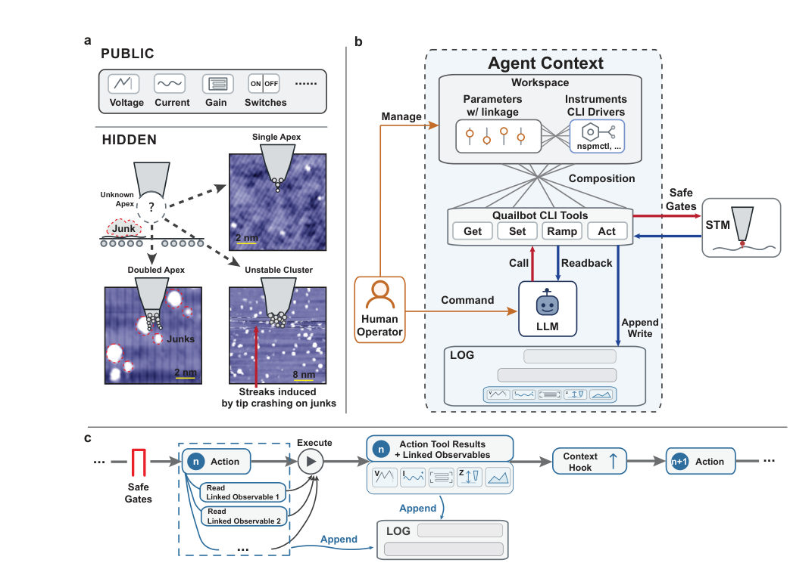
<figcaption class="paper-figure-caption"><b>Fig 1.</b> Figure 1: Overview of hidden states, tip conditioning and the quailbot harness. a, A representative example of public states and hidden states in tip conditioning. Tip conditioning acts on an unknown apex and can produce distinct imaging outcomes. The three topographs show a single apex with lattice contrast, a doubled apex with junk, and an unstable cluster with streaks. b, The overview of the quailbot harness. The human operator defines the workspace and instrument interfaces, including the linked observables of each declared capability. The LLM selects declared capabilities and supplies their arguments through four instrument-control CLI tools: Get, Set, Ramp and Act. The harness returns...</figcaption>
</figure>
<figure class="paper-figure-card">
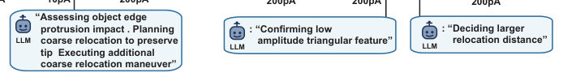
<figcaption class="paper-figure-caption"><b>Fig 2.</b> Figure 2: Anatomy of an end-to-end STM tip-conditioning run. a, STM topograph on FeTe acquired before the launch and its corresponding FFT. b, Partial topograph from the linked live-scan observable, showing a protrusion at the object edge. The scan was stopped by the agent before the topograph completed. c, Partial topograph from the linked live-scan observable, showing a triangular feature and a local streak. d, The final delivered topograph and its corresponding FFT. The four circles mark the first-order Bragg peaks. The BraggZ scores are 20.7 in a and 295.4 in d. e, Chronological trajectory of the presented run. Task events, agent-issued commands, and representative agent reasoning...</figcaption>
</figure>
<figure class="paper-figure-card">
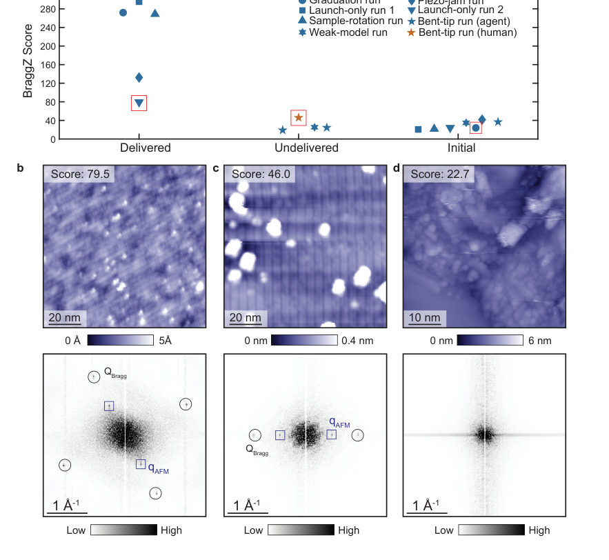
<figcaption class="paper-figure-caption"><b>Fig 3.</b> Figure 3: Post-run assessment of initial and endpoint STM images. a, BraggZ scores of to- pographs across all runs discussed in this paper. Topographs are classified as delivered, undelivered and initial states. The ”delivered/undelivered” classification is based on human expert’s assess- ment. The ”initial” states are topographs taken before a run starts. Blue markers denote agent-run results and the orange marker denotes the result after human takeover. Red boxes highlight the examples in b–d. b, Delivered topograph and corresponding FFT from Launch-only run 2, with a BraggZ score of 79.5. Four first-order Bragg peaks are resolved. The tip remains stable across isolated small surface...</figcaption>
</figure>
<figure class="paper-figure-card">
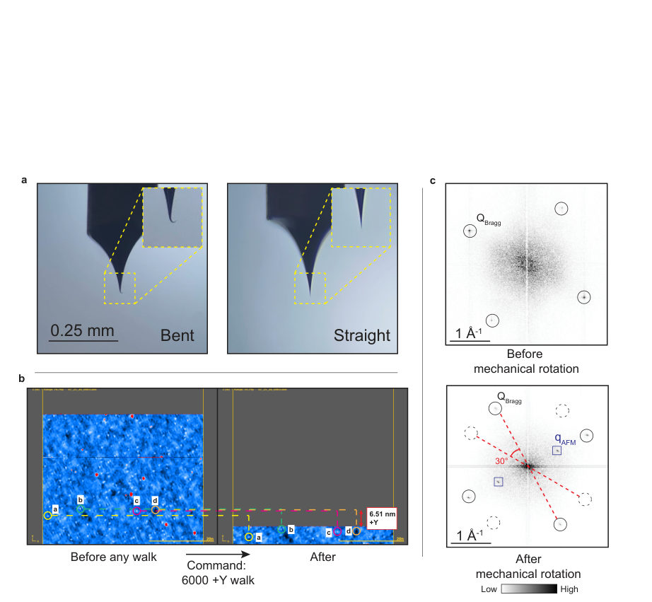
<figcaption class="paper-figure-caption"><b>Fig 4.</b> Figure 4: Unexpected conditions in STM tip conditioning. a, Optical microscopic images of a bent (left) and a straight (right) tungsten tip. b, Processed live-scan images before (left) and after (right) commands for a total of 6,000 coarse-walker steps along +Y . Colored circles mark corresponding defect features. Dashed lines connect their positions. The red arrow marks the displacement of 6.51 nm along Y . c, Amplitude FFTs of topographs from the pre-rotation (top) and post-rotation (bottom) periods. Both topographs were acquired over a 50 × 50 nm field of view at a scan angle of 0◦. Solid circles mark the first-order Bragg peaks. Dashed circles in the bottom FFT indicate the pre-rotation...</figcaption>
</figure>
</div>

<p><strong>Summary.</strong> This work demonstrates an LLM-based agent system, 'quailbot,' capable of autonomously performing complex, multi-step scientific tasks like STM tip conditioning. By integrating the LLM into the instrument's feedback loop, the agent learns to adapt to physical uncertainties and hidden experimental states. It advances the field by showing how AI can manage real-world, unpredictable physical measurements.</p>
<p><strong>Why it may be interesting.</strong> While the focus is on AI control, the underlying physical measurements (STM, lattice structure, correlated materials) are highly relevant to condensed matter physics, particularly in characterizing electronic states.</p>
<details>
<summary>Detailed structure</summary>
<p><strong>Main problem.</strong> Autonomous scientific agents must interpret the consequences of their interventions when operating with incomplete knowledge of the experimental state, especially when interventions alter hidden states unpredictably.</p>
<p><strong>Main result.</strong> LLM agents successfully completed end-to-end STM tip conditioning after apprenticeship, demonstrating adaptation to unexpected physical conditions.</p>
<p><strong>Method.</strong> The authors developed 'quailbot,' an agent harness that embeds an LLM into the instrument feedback loop to link physical interventions with experimental readbacks.</p>
<p><strong>Model / system.</strong> The physical system is Scanning Tunneling Microscopy (STM) tip conditioning on FeTe at 4 K. The agent interacts with the instrument using CLI tools to control physical parameters.</p>
<p><strong>Key observables.</strong> BraggZ score, topographs, Fourier transforms, and tunneling current are used to diagnose tip quality and surface structure.</p>
<p><strong>Important parameters / regimes.</strong> The experiment operates under conditions of hidden states (e.g., tip apex configuration) and unmodeled latent contingencies.</p>
<p><strong>Assumptions / limitations.</strong> The primary limitation is that the agent's autonomy is constrained by the observability and action limits of the real instrument, and it struggles when states are hidden or unmodeled.</p>
<p><strong>Figures summary.</strong> Figures illustrate the comparison of public vs. hidden states in tip conditioning, the architecture of the quailbot harness, and the sequence of agent actions during a successful run.</p>
<p><strong>Paper structure.</strong> The paper introduces the problem of action-outcome uncertainty in physical experiments, details the quailbot agent harness and its apprenticeship training, presents results showing autonomous completion of STM tip conditioning, and concludes by discussing the necessity of inferring hidden states.</p>
</details>
<details>
<summary>Abstract</summary>
<p>In physical experiments, interventions can alter hidden experimental states in ways that cannot be predicted in advance. Autonomous scientific agents must therefore interpret the consequences of their interventions while operating with incomplete knowledge of the experimental state. Here we investigate this problem using scanning tunneling microscopy (STM) tip conditioning, traditionally a human-expert-intensive task governed by inaccessible tip apex conditions and uncertain action outcomes. We introduce quailbot, an agent harness that places the LLM inside the instrument feedback loop by linking physical interventions with experimental readbacks. After a brief apprenticeship with a human expert, frontier LLM agents autonomously completed end-to-end tip conditioning on an STM and passed an independent verification. The contingencies that arose during the experiments further exposed the limits of LLM agentic autonomy when relevant experimental states or dynamics were hidden or unmodeled. Our results show that future autonomous physical experimentation requires agents to infer hidden and unmodeled experimental states, track the outcomes of their actions, and operate within the observability and action limits of real instruments.</p>
</details>
<p><sub><a href="#top">↑ back to top</a></sub></p>

<p><a id="paper-2609.28233"></a></p>
<h3 id="certifying-fermionic-gaussian-states-and-a-little-more-with-optimal-precision-dependence"><a href="http://arxiv.org/abs/2609.28233v1">Certifying fermionic Gaussian states (and a little more) with optimal precision dependence</a></h3>
<p><strong>Authors:</strong> Ninnat Dangniam, Laphas Premcharoen, Metrasit Sripech, Thiparat Chotibut<br>
<strong>Type:</strong> theory · <strong>Category:</strong> statistical mechanics · <strong>PDF:</strong> <a href="https://arxiv.org/pdf/2609.28233v1">https://arxiv.org/pdf/2609.28233v1</a><br>
<strong>Analysis basis:</strong> full PDF text, analyzed in chunks
<strong>Topic relevance:</strong> <code>quantum measurements</code> <strong>3/5</strong> · <code>analog quantum simulation</code> <strong>2/5</strong></p>
<div class="figure-strip-hint">↔ Scroll figures horizontally</div>
<div class="paper-figures-scroll">
<figure class="paper-figure-card">
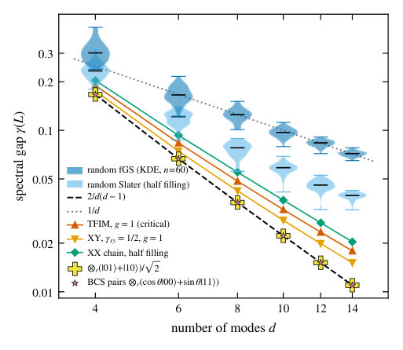
<figcaption class="paper-figure-caption"><b>Fig 1.</b> FIG. 1. Spectral gap γ(L) of the certification walk versus the number of modes d, on logarithmic axes. Violin plots show the distribution over n = 60 random instances per d—Haar- random pure fGS (dark) and random half-filled Slater de- terminants (light)—with horizontal lines at the medians and at the extreme values. Solid curves are the ground states of the critical transverse-field Ising chain (g = 1), the XY chain (γxy = 1/2, g = 1) and the half-filled XX chain. The two product families N</figcaption>
</figure>
<figure class="paper-figure-card">
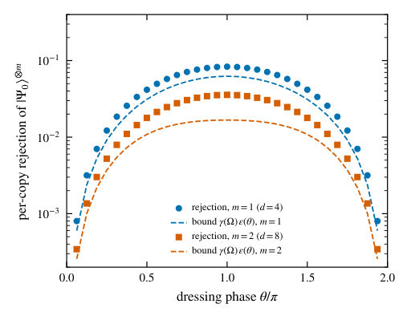
<figcaption class="paper-figure-caption"><b>Fig 2.</b> FIG. 2. Detection of a Gaussian impostor. Per- copy probability that Algorithm 1, run with target |Ψθ⟩⊗m</figcaption>
</figure>
</div>

<p><strong>Summary.</strong> This work develops an efficient, adaptive protocol to certify fermionic Gaussian states by analyzing the spectral gap of an associated Markov chain walk. It achieves optimal sample complexity scaling ($\epsilon^{-1}$) using only single-qubit measurements. This provides a rigorous theoretical tool for characterizing complex quantum states relevant to condensed matter physics.</p>
<p><strong>Why it may be interesting.</strong> The connection between quantum state verification complexity and the spectral gap of a Markov chain is a powerful theoretical tool, providing quantitative bounds on the resources needed for quantum characterization.</p>
<details>
<summary>Detailed structure</summary>
<p><strong>Main problem.</strong> The paper addresses the quantum state certification problem, specifically for fermionic Gaussian states, aiming to find measurement protocols with optimal sample complexity.</p>
<p><strong>Main result.</strong> They propose an adaptive protocol that certifies any $d$-mode pure fermionic Gaussian state using $O(d^2\epsilon^{-1})$ copies, achieving optimal $\epsilon^{-1}$ scaling with single-qubit measurements.</p>
<p><strong>Method.</strong> The approach involves establishing a spectral gap lower bound for a 'certification walk' (a Markov chain) associated with the state, linking efficiency to the Markov chain's relaxation time to equilibrium.</p>
<p><strong>Model / system.</strong> The focus is on fermionic Gaussian states (fGSs), which are ground states of quadratic fermionic Hamiltonians, relevant for quantum simulation of fermionic systems. The analysis uses concepts from Markov chain theory, such as spectral gaps, applied to the certification process.</p>
<p><strong>Key observables.</strong> The spectral gap ($\gamma(L)$) of the certification walk, and the sample complexity $N$ required for certification.</p>
<p><strong>Important parameters / regimes.</strong> Precision $\epsilon$, number of modes $d$, and the target fidelity $\delta$.</p>
<p><strong>Assumptions / limitations.</strong> The protocol relies on the spectral gap of a $d \leftrightarrow d-2$ down-up walk, and the analysis compares results against known bounds for Haar-typical states.</p>
<p><strong>Figures summary.</strong> Table II compares computed median and minimum spectral gaps ($\gamma(L)$) for random ensembles against the theoretical bound $rac{2}{d(d-1)}$ for various dimensions $d$.</p>
<p><strong>Paper structure.</strong> The paper builds from general QSV techniques, develops the connection between certification and spectral gaps via homogenization to a down-up walk, and concludes with detailed spectral gap calculations for various physical ensembles.</p>
</details>
<details>
<summary>Abstract</summary>
<p>Fermionic Gaussian states are the workhorse reference states for qubit-based quantum simulation of fermionic systems, yet existing certification protocols either proceed via fidelity estimation, leading to suboptimal sample complexity in the target precision $ε$, only apply to Haar-typical states, or require adaptive measurements on a large fraction of qubits. We give an adaptive protocol that certifies any $d$-mode pure fermionic Gaussian state using $O(d^2ε^{-1})$ copies, single-qubit measurements with only one qubit measured adaptively per copy, and $O(d^3)$ classical processing time per copy. The $ε^{-1}$ dependence is optimal for the certification problem, even among strategies using entangled measurements. The sample complexity is controlled by the spectral gap of a $d\leftrightarrow d-2$ down-up walk---a Markov chain studied in the theory of high-dimensional expanders, equivalent to a two-site Glauber dynamics in statistical physics---relating certification efficiency to relaxation time to equilibrium. The worst-case bound is tight for this protocol and is attained by physically relevant states, including ground states of the fully dimerized Su-Schrieffer-Heeger (SSH) chain and BCS pair states. In contrast, numerics up to $d=14$ suggest that $O(d ε^{-1})$ copies suffice to certify Haar-typical Gaussian states, a factor of $d$ improvement over the worst-case bound. Finally, because the bound depends only on the target's computational-basis distribution, the protocol extends to efficiently phase-dressed states---states obtained by injecting an efficiently computable diagonal phase to Gaussian states---with the same sample complexity. The class includes a continuous family of four-mode non-Gaussian magic states for matchgate computation.</p>
</details>
<p><sub><a href="#top">↑ back to top</a></sub></p>

<p><a id="paper-2609.28282"></a></p>
<h3 id="computation-of-anisotropic-singular-sums-from-high-order-derivatives-of-epstein-zeta-functions"><a href="http://arxiv.org/abs/2609.28282v1">Computation of anisotropic singular sums from high-order derivatives of Epstein zeta functions</a></h3>
<p><strong>Authors:</strong> Andreas A. Buchheit, Jonathan K. Busse<br>
<strong>Type:</strong> theory · <strong>Category:</strong> strongly correlated electrons · <strong>PDF:</strong> <a href="https://arxiv.org/pdf/2609.28282v1">https://arxiv.org/pdf/2609.28282v1</a><br>
<strong>Analysis basis:</strong> full PDF text, analyzed in chunks
<strong>Topic relevance:</strong> <code>analog quantum simulation</code> <strong>3/5</strong> · <code>Keldysh / 2PI / non-Gaussian methods</code> <strong>2/5</strong></p>
<div class="figure-strip-hint">↔ Scroll figures horizontally</div>
<div class="paper-figures-scroll">
<figure class="paper-figure-card">
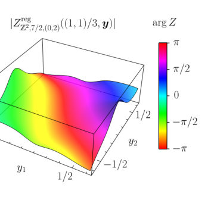
<figcaption class="paper-figure-caption"><b>Fig 1.</b> Figure 1. Two-dimensional anisotropic Epstein zeta function (a) and its regularized counterpart (b) for ν = 7/2, Λ = Z2, x = (1, 1)/3 and α = (0, 2) as a function of y ∈[−1/2, 1/2]2, where the height of the surface encodes the absolute function val- ues and the color encodes the arguments of the complex function values according to the cyclic colormap shown on the right. The anisotropic Epstein zeta function exhibits discontinuities at wave vector points in the reciprocal lattice, in particular at the origin y = 0, where the absolute value of the function at the origin, approximately equal to 3.11, can be seen as a dark dot through the transparent surface (a). The regularized anisotropic...</figcaption>
</figure>
<figure class="paper-figure-card">
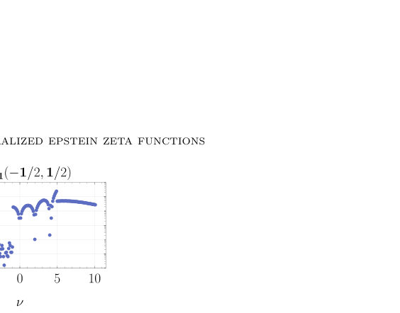
<figcaption class="paper-figure-caption"><b>Fig 2.</b> Figure 2. Error for a special case of the eight-dimensional anisotropic Epstein zeta function for the square lattice Λ = Z8, x = −1/2, y = 1/2 and α = 1 as a function of −10 ≤ν ≤10, where it can be exactly represented by the Ramanujan tau L- function. We achieve machine precision with a maximum error E &lt; 3 · 10−14 overall and an error E &lt; 2 · 10−16 for ν &lt; 1.</figcaption>
</figure>
<figure class="paper-figure-card">
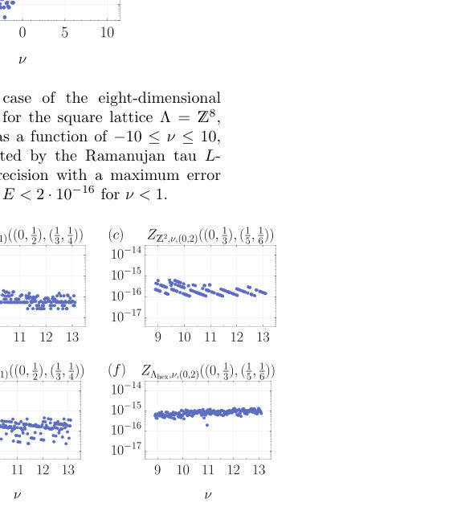
<figcaption class="paper-figure-caption"><b>Fig 3.</b> Figure 3. Minimum of absolute and relative error of ZΛ,ν,α(x, y) for various values of x, y and second order derivatives α for the square lattice Λ = Z2 (a-c) and the hexagonal lattice Λ = Λhex (d- f) as a function of 9 ≤ν ≤13 where the direct sum gives accurate reference values. The error is flat and bounded by E &lt; 2 · 10−15.</figcaption>
</figure>
<figure class="paper-figure-card">
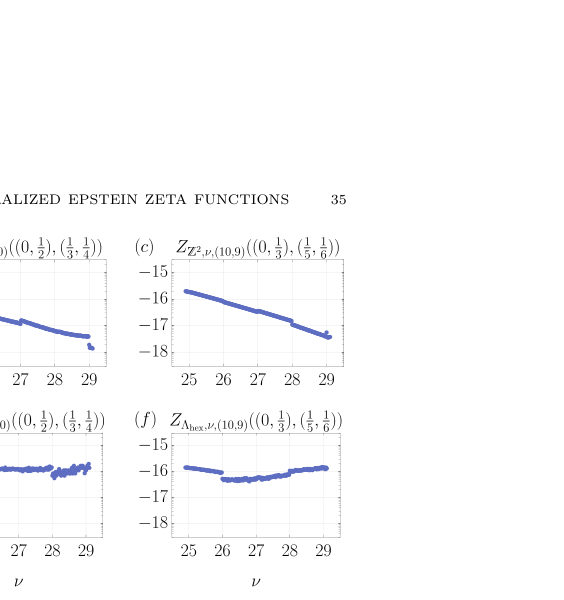
<figcaption class="paper-figure-caption"><b>Fig 4.</b> Figure 4. Minimum of absolute and relative error of ZΛ,ν,α(x, y) for various values of x, y and high-order anisotropy α for the square lattice Λ = Z2 (a-c) and the hexagonal lattice Λ = Λhex (d-f) as a function of 25 ≤ν ≤29 where the direct sum gives accurate reference values. The error is flat and bounded by E &lt; 3 · 10−16.</figcaption>
</figure>
<figure class="paper-figure-card">
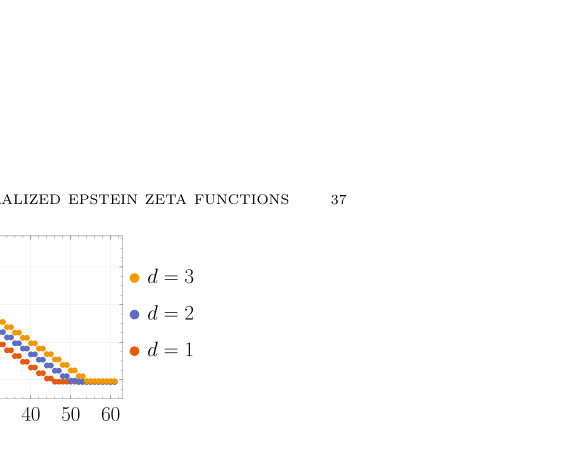
<figcaption class="paper-figure-caption"><b>Fig 5.</b> Figure 6. Error of the regularized Epstein zeta func- tion Zreg Zd,1/2(0, y) reconstructed through its Taylor se- ries in terms of the anisotropic Epstein zeta function P</figcaption>
</figure>
</div>

<p><strong>Summary.</strong> This work provides a rigorous mathematical and computational framework for evaluating anisotropic Epstein zeta functions, which are crucial for modeling long-range interactions in quantum and classical lattice systems. By developing stable algorithms, the authors overcome previous limitations in handling anisotropic kernels, providing tools for advanced simulations in condensed matter physics.</p>
<p><strong>Why it may be interesting.</strong> While the focus is mathematical, the direct application to dipolar interactions in magnetic materials and lattice models with long-range interactions makes it highly relevant for condensed matter theorists studying correlated electron systems.</p>
<details>
<summary>Detailed structure</summary>
<p><strong>Main problem.</strong> The paper addresses the fundamental computational challenge of precisely and efficiently evaluating large-scale lattice sums involving power-law kernels, especially in the anisotropic case.</p>
<p><strong>Main result.</strong> The authors derive a stably computable representation for the anisotropic Epstein zeta function and develop a high-precision numerical algorithm for its evaluation across various lattice geometries and anisotropy orders.</p>
<p><strong>Method.</strong> The methodology involves generalizing Epstein zeta functions, utilizing wave vector derivatives of lattice sums, and connecting the results to a generalized Euler-Maclaurin summation formula.</p>
<p><strong>Model / system.</strong> The theory applies to simulating classical and quantum systems characterized by long-range, anisotropic interactions, such as dipolar interactions in magnetic materials or in the context of topological superconductivity.</p>
<p><strong>Key observables.</strong> The anisotropic Epstein zeta function, its regularized form, and the coefficients derived from the singular Euler-Maclaurin expansion.</p>
<p><strong>Important parameters / regimes.</strong> Lattice structure ($\Lambda$), power-law decay exponent ($
u$), and anisotropy order ($\alpha$).</p>
<p><strong>Assumptions / limitations.</strong> The derivation relies on analytic continuation and the assumption that the function can be related to derivatives of theta functions and established identities.</p>
<p><strong>Paper structure.</strong> The paper is structured analytically, first defining the problem and deriving the stable representations, followed by developing the computational algorithm, and concluding with applications and benchmarking.</p>
</details>
<details>
<summary>Abstract</summary>
<p>The precise and efficient evaluation of large-scale lattice sums involving power-law kernels is a fundamental computational problem in the simulation of classical and quantum systems with long-range interactions. While methods for spatially isotropic kernels, some based on Epstein zeta functions, have advanced considerably in recent years, the anisotropic case has lagged behind, despite its broad relevance to both fundamental and effective interactions such as the dipole interaction in magnetic materials. In this work, we solve this issue by defining and analyzing anisotropic Epstein zeta functions for which we derive stably computable representations obtained from wave vector derivatives of lattice sums over isotropic interaction kernels. These functions find direct application in the analytical and numerical study of anisotropically interacting lattice systems. Going further, they provide the correction term in an exact equivalence between discrete lattices and their continuous analogs in a recent generalization of the classical Euler-Maclaurin summation formula to lattices and summands involving power-law kernels. Their connection to high-order derivatives of zeta functions can be used to improve convergence rates of numerical algorithms, for instance in micromagnetics, or to provide rapidly convergent expansions suitable for precomputations of generalized zeta functions. We derive a stably computable representation of anisotropic Epstein zeta functions, including the possibility for analytically removing Rayleigh--Wood singularities, and we develop a numerical algorithm for their stable evaluation for any lattice, power-law decay exponent and anisotropy order. We benchmark the algorithm against closed-form identities, direct summation and multi-precision results, obtaining machine precision across various lattices, power-law exponents, and anisotropy orders.</p>
</details>
<p><sub><a href="#top">↑ back to top</a></sub></p>

<p><a id="paper-2609.27097"></a></p>
<h3 id="investigation-of-widefield-nv-center-magnetic-imaging-for-non-destructive-materials-testing"><a href="http://arxiv.org/abs/2609.27097v1">Investigation of Widefield NV-Center Magnetic Imaging for Non-Destructive Materials Testing</a></h3>
<p><strong>Authors:</strong> Niklas Mathesa, Marvin Feuerhelm, Simon Philipp, Ivan Soldatov, Philipp DÁstolfo, Peter Knittel, Thomas Straubb, Jan Jeske, Rüdiger Quay, Xavier Vidal<br>
<strong>Type:</strong> experiment · <strong>Category:</strong> other · <strong>PDF:</strong> <a href="https://arxiv.org/pdf/2609.27097v1">https://arxiv.org/pdf/2609.27097v1</a><br>
<strong>Analysis basis:</strong> full PDF text, analyzed in chunks
<strong>Topic relevance:</strong> <code>QC/QI experiment</code> <strong>3/5</strong> · <code>quantum measurements</code> <strong>2/5</strong></p>
<div class="figure-strip-hint">↔ Scroll figures horizontally</div>
<div class="paper-figures-scroll">
<figure class="paper-figure-card">
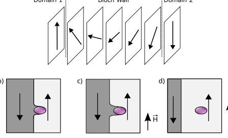
<figcaption class="paper-figure-caption"><b>Fig 1.</b> Figure 1: a) Schematic illustration of a domain wall separating two oppositely magnetized domains. The wall involves a gradual rotation of the magnetization between the domains. The typical width of a Bloch wall in bulk ferromagnetic materials is in the order of several tens to hundred nanometers b,c) Sketch of domain wall pinning at a material defect (purple). Although further wall motion would reduce magnetic free energy, the defect locally increases the energy barrier and hinders movement. d) The pinning barrier can be overcome by applying a sufficiently strong external magnetic field.</figcaption>
</figure>
<figure class="paper-figure-card">
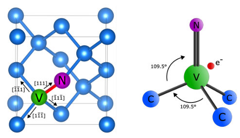
<figcaption class="paper-figure-caption"><b>Fig 2.</b> Figure 2: The basic structure of the NV center in diamond consisting of a substitutional nitrogen atom and a vacancy (V) within a diamond lattice consisting of carbon atoms. For the NV−-center, an additional electron is trapped in the vacancy.</figcaption>
</figure>
<figure class="paper-figure-card">
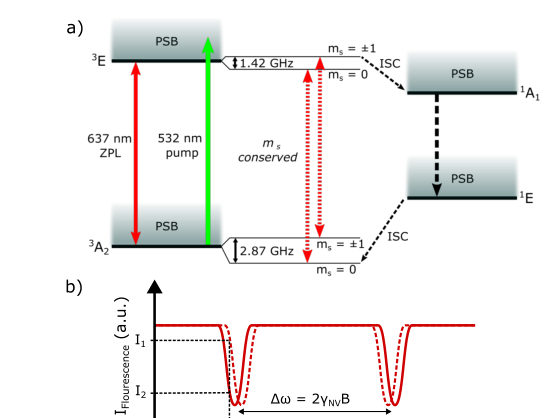
<figcaption class="paper-figure-caption"><b>Fig 3.</b> Figure 3: a) Simplified Energy Diagram of the NV−-center. The left hand side shows the triplet states and right hand side the singlet states. The fluorescence zero phonon line (ZPL) wavelength is 637 nm, the spin state is conserved for the fluorescent transitions. Absorption of the 532 nm laser light results in an excitation of the electronic system from the ground state to the excited state. The transitions in most cases involve the phononic sideband (PSB). The zero field splitting of the 𝑚𝑠= 0 and 𝑚𝑠= ±1 spin ground states is 2.87 GHz (1.42 GHz for the excited state). An alternative inter system crossing (ISC) decay path via an excited singlet results in a spin dependency of the...</figcaption>
</figure>
<figure class="paper-figure-card">
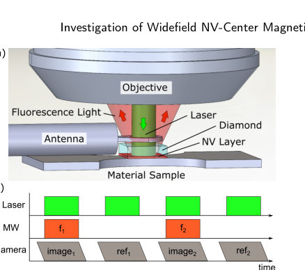
<figcaption class="paper-figure-caption"><b>Fig 4.</b> Figure 4: a) Simplified sketch of the widefield magnetometry setup. The NV-layer located near the top surface of the diamond is illuminated from the bottom using a collimated 532 nm laser beam. The fluorescence light is collected by the objective and imaged onto a camera sensor. The dichroic mirror reflects the green laser light letting only the fluorescence light pass. The AOM is needed for pulsing the laser, the image data is captured by a camera sensor. The presented graphic contains components from [49]. b) Scheme of the used cw- ODMR protocol. The microwave frequency is swept and an additional reference image is captured for each frequency step. The angled sides of the camera frames...</figcaption>
</figure>
<figure class="paper-figure-card">
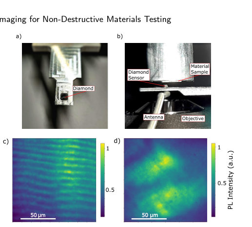
<figcaption class="paper-figure-caption"><b>Fig 5.</b> Figure 5: Photograph of a) the diamond sensor fixed on a cus- tom holder without sample and b) the diamond brought close to a material sample glued on an aluminum rod (side view). Both diamond and sample can be positioned individually, the diamond position angles can also be altered for alignment optimization. Interference pattern formed between diamond and sample surface during alignment c) far from optimum alignment and d) after alignment optimization.</figcaption>
</figure>
</div>

<p><strong>Summary.</strong> This research presents a novel, widefield quantum sensing technique using NV centers in diamond to image magnetic stray fields for non-destructive testing. By achieving high spatial resolution and sensitivity, the method can detect subtle magnetic signatures associated with early-stage material fatigue and microstructural damage. This advances the application of quantum sensing from fundamental physics into practical materials engineering.</p>
<p><strong>Why it may be interesting.</strong> This work demonstrates a direct, applied use of quantum sensing (NV centers) to solve a complex condensed matter problem (material failure analysis), bridging quantum physics with industrial materials science.</p>
<details>
<summary>Detailed structure</summary>
<p><strong>Main problem.</strong> The paper addresses the need for non-destructive testing (NDT) techniques capable of imaging microstructural changes in miniaturized materials, particularly those related to fatigue damage.</p>
<p><strong>Main result.</strong> A widefield NV-center magnetic imaging technique was developed, achieving high sensitivity and spatial resolution to detect characteristic magnetic stray field changes indicative of early fatigue damage in materials like electrical steel.</p>
<p><strong>Method.</strong> The authors developed and applied an experimental system using Nitrogen-Vacancy (NV) centers in diamond to image magnetic stray field distributions over macroscopic areas.</p>
<p><strong>Model / system.</strong> The physical system is the NV center in diamond, which acts as a quantum sensor whose spin state is sensitive to the local magnetic field ($\vec{B}$). The measurement relies on mapping the magnetic stray field distribution, which is influenced by the material's magnetic microstructure and defects.</p>
<p><strong>Key observables.</strong> Magnetic stray field distribution, Zeeman splitting maps, and characteristic changes in the magnetic field pattern after cyclic loading.</p>
<p><strong>Important parameters / regimes.</strong> Magnetic sensitivities below $10 \mu	ext{T}/\sqrt{	ext{Hz}}$ and a spatial resolution of $1-2 \mu	ext{m}$.</p>
<p><strong>Assumptions / limitations.</strong> The technique assumes that material fatigue alters the magnetic microstructure (e.g., domain wall pinning) in a way that produces a measurable, localized change in the stray magnetic field.</p>
<p><strong>Figures summary.</strong> Figures illustrate the physics of domain wall separation and pinning at defects, and the general setup for widefield sensing.</p>
<p><strong>Paper structure.</strong> The paper establishes the problem (NDT for small scales), introduces the quantum sensor (NV center), details the widefield experimental setup and achieved metrics, and demonstrates the application by detecting fatigue-related magnetic changes in test samples.</p>
</details>
<details>
<summary>Abstract</summary>
<p>Due to progressing miniaturization, material fatigue is expected to gain importance on microscopic scales. Nevertheless, most non-destructive testing techniques are optimized for macroscopic scales. Therefore, new approaches applicable to miniaturized samples need to be explored. High spatial resolution imaging of a material's magnetic stray field enables sensitive detection of microstructural changes due to the local interplay of magnetic properties, strain, and defects. Up to now, this approach has rarely been used for materials testing since high-resolution magnetic sensing is traditionally challenging. Novel quantum sensing techniques offer the potential to close this gap. One of the most prominent quantum sensors, the nitrogen vacancy center in diamond, is investigated for non-destructive testing applications within the scope of this work. An experimental system based on a widefield sensing approach was developed to image magnetic stray field distributions within seconds to minutes over areas up to 1 x 1 $mm^2$. Magnetic sensitivities below 10 $μ$T/$\sqrt{\text{Hz}}$ and a spatial resolution of 1-2 $μ$m were achieved. The technique offers high mechanical stability, which is crucial for non-destructive testing applications. Comparison with magneto-optical Kerr effect measurements showed that the magnetic field maps are strongly correlated with the material's surface domains while containing additional information from deeper inside the sample. Characteristic changes in the magnetic stray field distribution were detected in an electrical steel sample after cyclic loading. A potential marker for early fatigue damage was deduced from the splitting gradient distribution, while 2D Fourier transform analysis provided additional insight.</p>
</details>
<p><sub><a href="#top">↑ back to top</a></sub></p>

<p><a id="paper-2609.28066"></a></p>
<h3 id="quantum-metrology-for-signals-with-an-unknown-causal-structure"><a href="http://arxiv.org/abs/2609.28066v1">Quantum Metrology for Signals with an Unknown Causal Structure</a></h3>
<p><strong>Authors:</strong> Gwon Ryul Han, Hyukgun Kwon, Seok Hyung Lie<br>
<strong>Type:</strong> theory · <strong>Category:</strong> other · <strong>PDF:</strong> <a href="https://arxiv.org/pdf/2609.28066v1">https://arxiv.org/pdf/2609.28066v1</a><br>
<strong>Analysis basis:</strong> full PDF text, analyzed in chunks
<strong>Topic relevance:</strong> <code>quantum measurements</code> <strong>3/5</strong> · <code>interference shaping light</code> <strong>2/5</strong></p>
<div class="figure-strip-hint">↔ Scroll figures horizontally</div>
<div class="paper-figures-scroll">
<figure class="paper-figure-card">
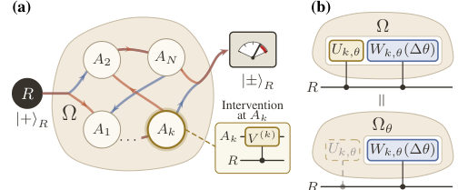
<figcaption class="paper-figure-caption"><b>Fig 1.</b> FIG. 1. (a) Causally agnostic interferometry. A reference system R prepared in |+⟩R probes events in spacetime state Ωthrough local interventions V (k) Ak controlled on |1⟩R, followed by measurement in |±⟩R. The same local probing prescription applies without specify- ing an encounter order. (b) Absorbing all fixed local signals Uk,θ into Ωθ = UθΩleaves only the deviations Wk,θ(∆θ) around θ as nominal interventions. The fixed signals act only on arm |1⟩R, so Ωθ can be irregular.</figcaption>
</figure>
</div>

<p><strong>Summary.</strong> This theoretical paper develops a framework for quantum metrology when the causal structure of the interacting signals is unknown. It proves that the measurement must be interferometric and establishes a universal spacetime Heisenberg limit for the achievable precision. This result is significant because it provides an order-independent bound for sensing parameters in complex physical systems like radar or scattering experiments.</p>
<p><strong>Why it may be interesting.</strong> This work provides a powerful, order-independent generalization of quantum metrology bounds, which is crucial for interpreting data from complex, non-sequential physical measurements where causality cannot be assumed.</p>
<details>
<summary>Detailed structure</summary>
<p><strong>Main problem.</strong> The paper addresses quantum metrology for signals where the causal structure (the order and timing of interactions) is unknown beforehand, a scenario common in experiments like radar or scattering.</p>
<p><strong>Main result.</strong> The authors derive a universal upper bound, the spacetime Heisenberg limit, for the Fisher information that is independent of the unknown event ordering, demonstrating that causal agnosticity forces the measurement scheme to be interferometric.</p>
<p><strong>Method.</strong> The analysis utilizes the 'quantum state over spacetime' formalism ($\Omega$) and derives bounds on the Fisher information by analyzing interference terms associated with local unitary interactions.</p>
<p><strong>Model / system.</strong> The model involves quantum sensing using interferometry, described by a spacetime state $\Omega$ acting on multiple discrete events $A_k$. The formalism generalizes density operators to arbitrary spacetime regions to handle unknown causal structures.</p>
<p><strong>Key observables.</strong> Fisher information ($F_	heta$), Interference Term ($I_\Omega$), Spacetime Heisenberg Limit ($\mathcal{F}_	heta$), and the shared reference system coherence.</p>
<p><strong>Important parameters / regimes.</strong> The number of sensing events ($N$), the signal parameter ($ heta$), and the local generator norms ($|h_{k,  heta}|_\infty$).</p>
<p><strong>Assumptions / limitations.</strong> The analysis is based on the assumption of causal agnosticity, meaning the measurement protocol must work regardless of the true causal ordering of the signals.</p>
<p><strong>Figures summary.</strong> Figure 1 illustrates the general setup for causally agnostic interferometry and probing spacetime states using local interventions.</p>
<p><strong>Paper structure.</strong> The paper builds from establishing that causal agnosticity mandates an interferometric measurement scheme, deriving the universal bound (spacetime Heisenberg limit), and then analyzing saturation conditions using both general spacetime states and specific cases like classical mixtures or fixed causal orders.</p>
</details>
<details>
<summary>Abstract</summary>
<p>Quantum sensing protocols usually presuppose where and when each signal acts, yet this information is unavailable beforehand in experiments such as scattering and radar. We show that causal agnosticity forces a measurement scheme to be interferometric even when only discrete interactions are allowed. Describing the sensing events in the recently developed quantum state over spacetime formalism, we then prove that the Fisher information of an interferometer is bounded by the squared sum of the local generator norms, independently of how the events are ordered. Nonunitary and spatiotemporally correlated signals can be explained as well when their physical dilation has a spacetime state on the enlarged events. Notably, the bound holds without presupposing a background spacetime that orders the events whenever the full collection of target and auxiliary events has a spacetime state. We show that this bound yields the spacetime Heisenberg limit and characterize its saturation through marginals of the spacetime state `dressed' by the signal. The $N^2$ scaling of the Fisher information with $N$ sensing events arises from the coherence of a single reference system shared across spacetime, whereas independently repeated interferometry obeys the standard quantum limit.</p>
</details>
<p><sub><a href="#top">↑ back to top</a></sub></p>

<p><a id="paper-2609.26971"></a></p>
<h3 id="robust-strange-metallicity-across-attractive-and-repulsive-hubbard-models"><a href="http://arxiv.org/abs/2609.26971v1">Robust Strange Metallicity across Attractive and Repulsive Hubbard Models</a></h3>
<p><strong>Authors:</strong> Xiaoyue Ma, Emily Z. Zhang, Thomas P. Devereaux<br>
<strong>Type:</strong> theory · <strong>Category:</strong> strongly correlated electrons · <strong>PDF:</strong> <a href="https://arxiv.org/pdf/2609.26971v1">https://arxiv.org/pdf/2609.26971v1</a><br>
<strong>Analysis basis:</strong> full PDF text, analyzed in chunks
<strong>Topic relevance:</strong> <code>analog quantum simulation</code> <strong>3/5</strong> · <code>Keldysh / 2PI / non-Gaussian methods</code> <strong>1/5</strong> · <code>non-equilibrium universality</code> <strong>1/5</strong></p>
<div class="figure-strip-hint">↔ Scroll figures horizontally</div>
<div class="paper-figures-scroll">
<figure class="paper-figure-card">
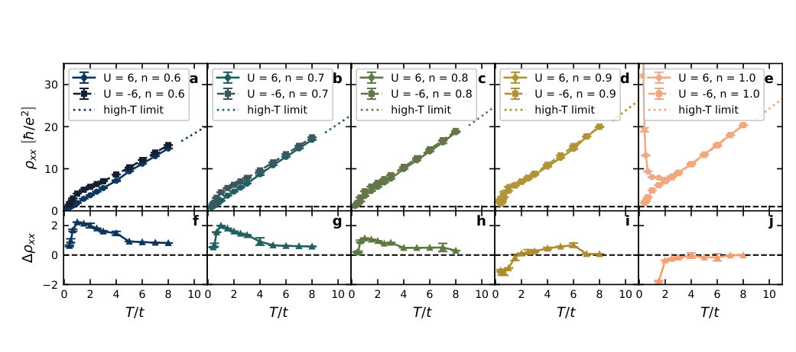
<figcaption class="paper-figure-caption"><b>Fig 1.</b> FIG. 1. a–e Temperature dependence of the dc resistivity ρxx in the attractive and repulsive Hubbard models, obtained from DQMC simulations combined with MaxEnt analytic continuation. The model parameters are |U|/t = 6. The black dashed line marks the MIR limit, ρxx = ℏ/e2, while the dotted lines show the high-temperature asymptotes obtained from the moments expansion. f–j Corresponding resistivity difference between the attractive and repulsive models, defined as ∆ρxx (|U| , n) ≡ρxx(U &lt; 0, n) −ρxx(U &gt; 0, n).</figcaption>
</figure>
<figure class="paper-figure-card">
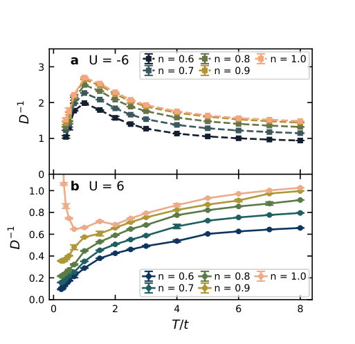
<figcaption class="paper-figure-caption"><b>Fig 2.</b> FIG. 3. Inverse charge diffusivity D−1 of a the attractive Hubbard model, and b the repulsive Hubbard model, as func- tions of temperature T = 1/β, obtained through DQMC sim- ulations, with | U | /t = 6.</figcaption>
</figure>
<figure class="paper-figure-card">
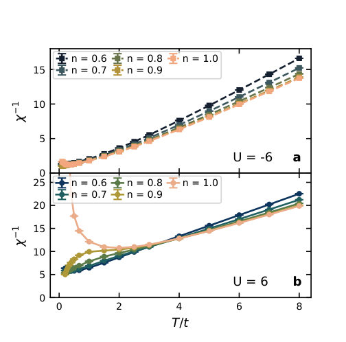
<figcaption class="paper-figure-caption"><b>Fig 3.</b> FIG. 2. Inverse charge compressibility χ−1 of a the attrac- tive Hubbard model, and b the repulsive Hubbard model, as functions of temperature T = 1/β, obtained through DQMC simulations, with | U | /t = 6.</figcaption>
</figure>
<figure class="paper-figure-card">
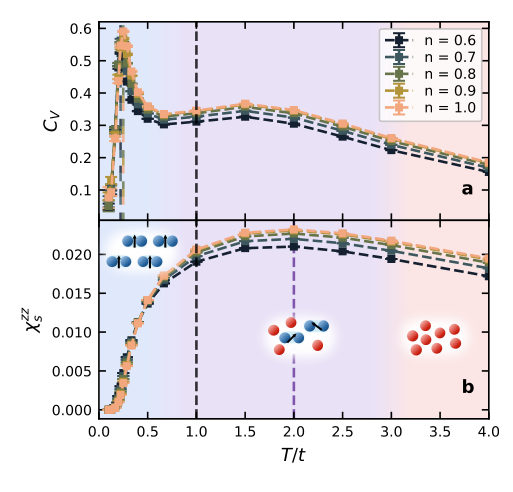
<figcaption class="paper-figure-caption"><b>Fig 4.</b> FIG. 4. Temperature scales associated with pair formation in the attractive Hubbard model. a Specific heat CV , and b uniform spin susceptibility χzz s as functions of tempera- ture T = 1/β, calculated using DQMC for U/t = −6 at the indicated fillings. The black vertical dashed line marks the temperature at which the inverse diffusivity D−1 reaches its maximum. The purple vertical dashed line in b indicates the peak temperature of χzz s . In a, the colored vertical dashed lines mark the low-temperature peaks in CV , with each color corresponding to the filling ⟨n⟩of the associated data.</figcaption>
</figure>
</div>

<p><strong>Summary.</strong> This work uses DQMC simulations to compare charge transport in attractive and repulsive Hubbard models at strong coupling. The authors find that both models exhibit strange-metal behavior ($
ho \propto T$) over a wide temperature range, suggesting this linear resistivity is a generic feature of incoherent transport rather than being dictated by the system's ultimate low-temperature state. The distinction between the two models only becomes apparent at much lower temperatures.</p>
<p><strong>Why it may be interesting.</strong> The finding that transport linearity is robust across different low-energy correlation types suggests a universal transport constraint in the incoherent regime, which is a general concept applicable to many-body dynamics.</p>
<details>
<summary>Detailed structure</summary>
<p><strong>Main problem.</strong> The study investigates the origin of 'strange metallicity,' characterized by linear-in-temperature resistivity, in strongly correlated electron systems.</p>
<p><strong>Main result.</strong> The linear-in-temperature resistivity observed in both attractive and repulsive Hubbard models is robust and appears insensitive to the microscopic nature of the low-energy correlations.</p>
<p><strong>Method.</strong> The research employs Determinant Quantum Monte Carlo (DQMC) simulations combined with the Maximum Entropy (MaxEnt) method for analytic continuation of current-current correlators.</p>
<p><strong>Model / system.</strong> The system is the two-dimensional Hubbard model, analyzed in both attractive ($U<0$) and repulsive ($U>0$) regimes at strong coupling ($|U|/t=6$).</p>
<p><strong>Key observables.</strong> DC longitudinal resistivity ($
ho_{xx}$), charge compressibility ($\chi_c$), and charge diffusivity ($D$).</p>
<p><strong>Important parameters / regimes.</strong> Strong coupling regime ($|U|/t=6$), temperature dependence across intermediate and high-temperature regimes, and comparison between $U<0$ and $U>0$.</p>
<p><strong>Assumptions / limitations.</strong> The analysis relies on the Nernst–Einstein relation connecting resistivity to compressibility and diffusivity, and the high-temperature behavior is analyzed via moment expansion.</p>
<p><strong>Figures summary.</strong> Figures illustrate the temperature dependence of resistivity ($
ho_{xx}$) for both interaction signs, showing the common linear-T behavior, and also plot the temperature dependence of $\chi^{-1}$ and $D^{-1}$ separately.</p>
<p><strong>Paper structure.</strong> The paper compares transport properties in the attractive and repulsive Hubbard models across various temperatures, establishing the common linear-T resistivity in the incoherent regime, and then analyzing the low-temperature deviations where the models separate.</p>
</details>
<details>
<summary>Abstract</summary>
<p>Using determinant quantum Monte Carlo simulations, we compare charge transport in the two-dimensional attractive and repulsive Hubbard models at strong coupling, $|U|/t=6$. Although the interaction with opposite signs generates qualitatively different low-energy spin, charge, and pairing correlations, both exhibit approximately linear-in-temperature resistivity over a broad intermediate- and high-temperature regime. At asymptotically high temperature this common behavior follows from the moment expansion of the conductivity, whose leading contribution is even in $U$. More strikingly, the similarity persists to temperatures well below $|U|$, where strong interaction-dependent correlations have already developed, and also irrespective of whether resistivity crosses the MIR limit. Using the Nernst--Einstein relation, we find that the common linear-in-temperature resistivity is primarily associated with an approximately Curie-like charge compressibility and weakly temperature-dependent diffusivity. The two models separate only at lower temperatures, where the attractive model develops a pronounced feature in the charge diffusivity correlated with signatures of pair formation. These results show that linear-in-temperature incoherent transport in the Hubbard model can be remarkably insensitive to the microscopic nature of the low-energy correlations. Our results suggest that transport in the incoherent regime appears insensitive to what the system will ultimately become at low temperature; the distinction between competing low-energy states becomes visible only when their characteristic correlations acquire sufficiently long spatial or temporal coherence.</p>
</details>
<p><sub><a href="#top">↑ back to top</a></sub></p>

<p><a id="paper-2609.27704"></a></p>
<h3 id="the-winners-curse-in-hardware-vqe-drift-differenced-remeasurement-of-finite-shot-selection-bias"><a href="http://arxiv.org/abs/2609.27704v1">The winner's curse in hardware VQE: drift-differenced remeasurement of finite-shot selection bias</a></h3>
<p><strong>Authors:</strong> Julen Larrucea<br>
<strong>Type:</strong> experiment · <strong>Category:</strong> quantum information and computing · <strong>PDF:</strong> <a href="https://arxiv.org/pdf/2609.27704v1">https://arxiv.org/pdf/2609.27704v1</a><br>
<strong>Analysis basis:</strong> full PDF text, analyzed in chunks
<strong>Topic relevance:</strong> <code>QC/QI experiment</code> <strong>3/5</strong> · <code>quantum measurements</code> <strong>2/5</strong></p>
<div class="figure-strip-hint">↔ Scroll figures horizontally</div>
<div class="paper-figures-scroll">
<figure class="paper-figure-card">
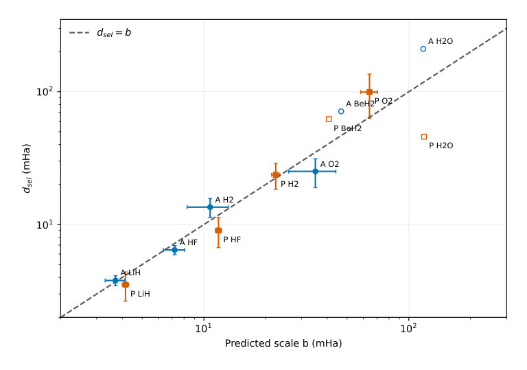
<figcaption class="paper-figure-caption"><b>Fig 1.</b> Figure 1: Drift-differenced contrast against the Gaussian order-statistic scale based on each source run’s archived evaluation count and later fixed-parameter scatter. Labels identify molecule and backend (A/P); bars show descriptive source-record SEMs in both coordinates where replicated, without accounting for cross-cell session dependence. Single-source stress cells are open symbols without bars. The dashed identity line is the parameter-free prediction; Blom’s approximation defines the expected minimum coefficient [25].</figcaption>
</figure>
<figure class="paper-figure-card">
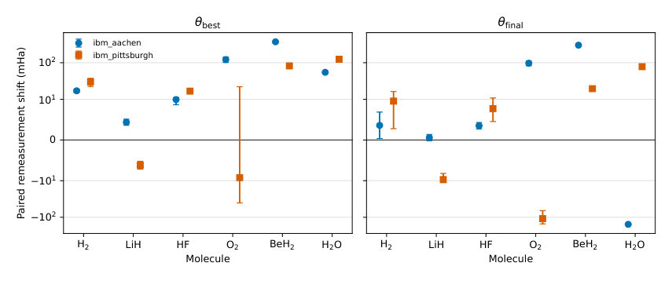
<figcaption class="paper-figure-caption"><b>Fig 2.</b> Figure 2: Change in active-space energy when θbest (left) and θfinal (right) are remeasured independently without mitigation. Markers show mean paired shifts; error bars are ±1 source- record SEM and are omitted for the single-source BeH2 and H2O stress tests. The symmetric- logarithmic ordinate preserves the small core effects while displaying the full interval from the Pittsburgh O2 lower bar below −150 mHa to the Aachen BeH2 shift of +373 mHa. Positive values indicate a higher remeasured energy.</figcaption>
</figure>
<figure class="paper-figure-card">

<figcaption class="paper-figure-caption"><b>Fig 3.</b> Figure 1 summarizes the drift-differenced scale comparison; Table 3 and Figure 2 show molecule- and backend-dependent remeasurement. On ibm pittsburgh, H2 and HF shift up- ward by 29.9 and 16.7 mHa, LiH shifts downward by 6.2 mHa, and O2 is unresolved. On ibm aachen, H2, LiH, and HF shift upward by 17.1, 4.4, and 9.9 mHa; all three survive Holm</figcaption>
</figure>
<figure class="paper-figure-card">
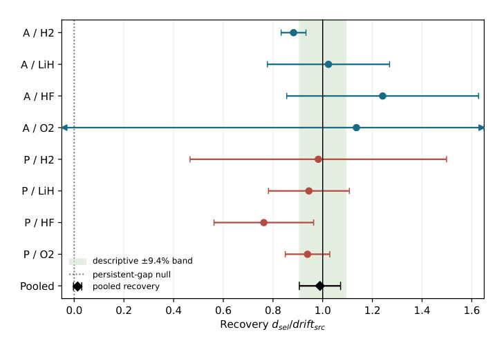
<figcaption class="paper-figure-caption"><b>Fig 4.</b> Figure 3: Recovery for the eight replicated cells. Markers use the same ratio-of-means estimator as Table 4. Cell bars are approximate delta-method intervals with a tn−1 critical value; arrows mark truncated intervals. The pooled diamond uses the cell-balanced session-cluster interval. Shading is the retrospective ±9.4% containment band, not a prespecified equivalence margin. A/P denote Aachen/Pittsburgh.</figcaption>
</figure>
</div>

<p><strong>Summary.</strong> This paper investigates the reliability of Variational Quantum Eigensolver (VQE) results obtained on current quantum hardware by analyzing finite-shot selection bias. Using drift-differenced remeasurement, the authors demonstrate that the apparent accuracy gains from optimization are often artifacts of the measurement process. They conclude that hardware-reported best-case energies must be treated with caution and require rigorous, independent validation.</p>
<p><strong>Why it may be interesting.</strong> This work directly tackles the practical limitations of near-term quantum hardware for quantum chemistry, providing crucial diagnostics on how measurement noise and optimization procedures can mislead users into overestimating computational accuracy.</p>
<details>
<summary>Detailed structure</summary>
<p><strong>Main problem.</strong> The paper addresses the 'winner's curse' in hardware Variational Quantum Eigensolver (VQE) calculations, where finite-shot optimization can lead to artificially accurate energy estimates.</p>
<p><strong>Main result.</strong> Independent evaluation using drift-differenced remeasurement showed that most of the apparent advantage gained by the optimizer disappears, suggesting that accuracy claims based on best-observed hardware VQE values require independent verification.</p>
<p><strong>Method.</strong> The authors use a drift-differenced estimator to compare later remeasurements of optimized parameters against the initial best-observed values, effectively canceling common epoch shifts to quantify selection bias.</p>
<p><strong>Model / system.</strong> The study benchmarks molecular ground-state energies for six molecules ($   ext{H}_2$, $    ext{LiH}$, $    ext{HF}$, $ ext{O}_2$, $    ext{BeH}_2$, $  ext{H}_2    ext{O}$) using active-space Hamiltonians.</p>
<p><strong>Key observables.</strong> Signed best error (relative to exact active-space eigenvalue), primary recovery estimate (e.g., 0.989), and energy shifts ($   ext{dsel}$) between measurement epochs.</p>
<p><strong>Important parameters / regimes.</strong> The analysis is performed on two IBM Heron processors, utilizing fixed active-space Hamiltonians and varying shot counts.</p>
<p><strong>Assumptions / limitations.</strong> Accuracy claims based on best-observed hardware VQE values require independent checking, and the benchmark primarily tests estimator reproducibility rather than absolute chemical accuracy.</p>
<p><strong>Figures summary.</strong> The figures summarize hardware optimization traces showing signed errors, and tables detail the calculated energy shifts ($    ext{dsel}$ and $    ext{dsel}/  ext{b}$) across different molecules and backends.</p>
<p><strong>Paper structure.</strong> The paper systematically benchmarks VQE performance across multiple molecules on two hardware backends, focusing on quantifying systematic energy shifts ($    ext{dsel}$) using drift-differenced analysis to correct for finite-shot selection bias.</p>
</details>
<details>
<summary>Abstract</summary>
<p>Finite-shot optimization can make noisy variational quantum eigensolver energies look artificially accurate. We studied six molecules on two IBM Heron r3 processors in eight replicated cells. Seven optimizer-selected values fell below the exact active-space eigenvalue by up to mHa. Independent later evaluation of the selected and final parameter points, differenced to remove a common epoch shift, showed that most of the selected advantage disappeared: the primary recovery was (approximate 95% session-level interval). Across the reported aggregation choices, recovery estimates ranged from 0.892 to 0.989. The measured contrast was consistent in scale with finite-shot selection, while calibration drift and other sources of variation remain possible. Accuracy claims based on best-observed hardware VQE values therefore require an independent check.</p>
</details>
<p><sub><a href="#top">↑ back to top</a></sub></p>

<p><a id="paper-2609.27640"></a></p>
<h3 id="near-optimal-bell-nonlocality-with-gkp-and-entangled-cat-states"><a href="http://arxiv.org/abs/2609.27640v1">Near-Optimal Bell Nonlocality with GKP and Entangled Cat States</a></h3>
<p><strong>Authors:</strong> Özlem Erkılıç, Aritra Das, S. Nibedita Swain, Simon Devitt, Timothy C. Ralph<br>
<strong>Type:</strong> theory · <strong>Category:</strong> quantum information and computing · <strong>PDF:</strong> <a href="https://arxiv.org/pdf/2609.27640v1">https://arxiv.org/pdf/2609.27640v1</a><br>
<strong>Analysis basis:</strong> full PDF text, analyzed in chunks
<strong>Topic relevance:</strong> <code>quantum measurements</code> <strong>3/5</strong> · <code>quantum optics experiment</code> <strong>1/5</strong></p>
<div class="figure-strip-hint">↔ Scroll figures horizontally</div>
<div class="paper-figures-scroll">
<figure class="paper-figure-card">
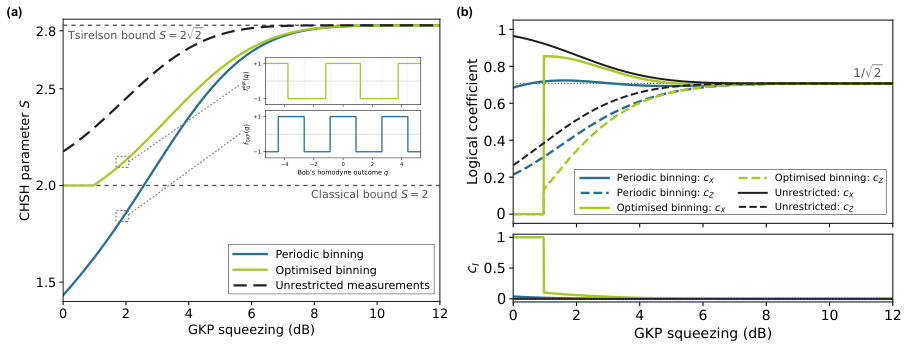
<figcaption class="paper-figure-caption"><b>Fig 1.</b> FIG. 1. Measurement-constrained Bell nonlocality of finite-energy GKP Bell states. (a) Maximum CHSH parameter as a function of GKP squeezing for periodic GKP binning, optimised homodyne binning, and unrestricted dichotomic measurements (Refer to Appendix C for the simulation parameters). The horizontal lines indicate the classical bound S = 2 and the Tsirelson bound S = 2 √</figcaption>
</figure>
<figure class="paper-figure-card">
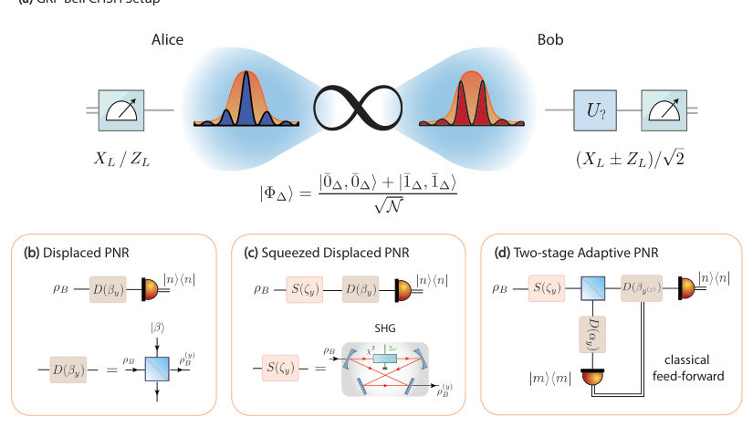
<figcaption class="paper-figure-caption"><b>Fig 2.</b> FIG. 2. GKP Bell-test setup and photon-number-resolving receiver architectures. (a) Alice and Bob share the logical GKP Bell state |Φ∆⟩. Alice measures either XL or ZL, while the optimal CHSH measurements for Bob correspond to the tilted logical observables (XL ± ZL)/ √</figcaption>
</figure>
<figure class="paper-figure-card">
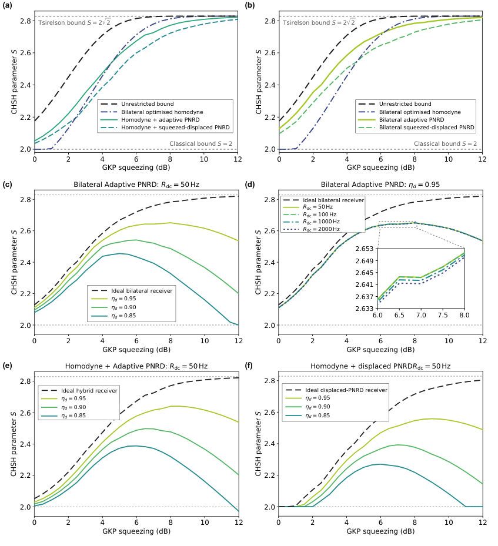
<figcaption class="paper-figure-caption"><b>Fig 3.</b> FIG. 3. Physical measurement strategies and detector-noise robustness for finite-energy GKP Bell states. (a) The unrestricted dichotomic benchmark, bilateral optimised homodyne detection, and homodyne detection for Alice combined with either adap- tive PNRD or squeezed-displaced PNRD for Bob. (b) The unrestricted benchmark, bilateral optimised homodyne detection, bilateral adaptive PNRD, and bilateral squeezed-displaced PNRD without a tapped mode. In the adaptive receiver, the first PNR outcome selects the second displacement according to m = 0 or m ≥1. Panels (c)–(f) include detector imperfections. (c) Bilateral adaptive PNRD for ηd = 0.95, 0.90, and 0.85 at Rdc = 50 Hz. (d) Dark-count...</figcaption>
</figure>
<figure class="paper-figure-card">
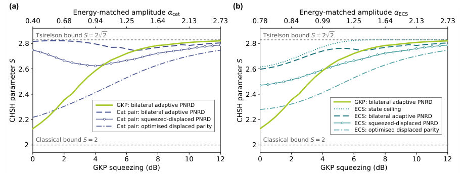
<figcaption class="paper-figure-caption"><b>Fig 4.</b> FIG. 4. Energy-matched comparison of the finite-energy GKP Bell state with coherent-state Bell resources. Panel (a) shows the cat-code Bell pair and panel (b) the entangled coherent state (ECS), each compared with the bilateral adaptive-PNRD result for the GKP Bell state. At each value of GKP squeezing, the mean photon number per mode is matched across the three state families, with the corresponding cat-state and ECS amplitudes shown on the upper axes. The yellow-green curve shows the bilateral adaptive-PNRD result for the GKP Bell state. Blue curves in (a) and teal curves in (b) correspond to the cat-code Bell pair and ECS, respectively. For each coherent-state family, the dashed curve...</figcaption>
</figure>
<figure class="paper-figure-card">
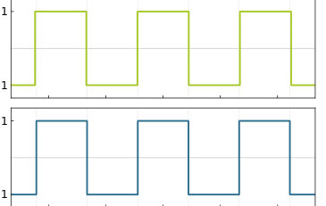
<figcaption class="paper-figure-caption"><b>Fig 5.</b> FIG. 5. Homodyne binning functions underlying Fig. 1(a) at 10 dB of GKP squeezing. The upper panel shows Bob’s optimised binary filter f opt 0 (q) for the y = 0 CHSH setting, obtained from the joint optimisation of Alice’s and Bob’s ho- modyne binning functions. The lower panel shows the stan- dard periodic GKP binning function fGKP(q). The vertical dotted lines indicate the periodic GKP bin boundaries. At this squeezing level, the optimised filter has converged to the periodic assignment over the displayed range, consistent with the near coincidence of the two CHSH curves in Fig. 1(a).</figcaption>
</figure>
</div>

<p><strong>Summary.</strong> This work investigates how to demonstrate Bell nonlocality using GKP states, which are key for fault-tolerant quantum computing but are limited by current squeezing technology. The authors show that by employing non-Gaussian measurements, specifically photon-number-resolving detection, they can achieve high Bell violations without needing complex quantum gates. This identifies non-Gaussian measurement techniques as a practical tool for characterizing nonlocality in realistic bosonic systems.</p>
<p><strong>Why it may be interesting.</strong> It provides a concrete, experimentally relevant pathway to testing fundamental quantum properties (nonlocality) in resource-constrained quantum systems (finite-squeezing GKP states), bridging theory with near-term quantum optics capabilities.</p>
<details>
<summary>Detailed structure</summary>
<p><strong>Main problem.</strong> The paper addresses the challenge of realizing quantum information tasks, specifically Bell nonlocality, using finite-squeezing Gottesman-Kitaev-Preskill (GKP) states, given current experimental limitations.</p>
<p><strong>Main result.</strong> The authors demonstrate that non-Gaussian measurements, such as photon-number-resolving detection combined with Gaussian preprocessing, can reveal significant Bell nonlocality in finite-energy bosonic states without requiring complex logical non-Clifford gates.</p>
<p><strong>Method.</strong> The study involves calculating the CHSH Bell inequality violation ($S$) for GKP Bell states under various measurement constraints (periodic vs. optimized homodyne binning) and comparing these to the theoretical maximum.</p>
<p><strong>Model / system.</strong> The system under study is the GKP state, a bosonic encoding used for fault-tolerant quantum computing. The analysis models the state using finite-energy approximations and tests its nonlocality using continuous-variable measurements.</p>
<p><strong>Key observables.</strong> CHSH violation parameter ($S$), squeezing parameter ($\Delta$), and the effective logical measurement directions.</p>
<p><strong>Important parameters / regimes.</strong> Squeezing parameter ($\Delta$), detection efficiency ($\eta_d$), and electronic noise ($\epsilon_{el}$).</p>
<p><strong>Assumptions / limitations.</strong> The analysis assumes the ability to perform photon-number-resolving detection and models noise sources like detection inefficiency and electronic noise in the measurement apparatus.</p>
<p><strong>Figures summary.</strong> Figures compare the CHSH violation ($S$) versus GKP squeezing for different measurement strategies (periodic, optimized, unrestricted), showing the improvement gained by adaptive measurement techniques.</p>
<p><strong>Paper structure.</strong> The paper progresses by first establishing the theoretical limitations of ideal GKP states, then rigorously comparing the CHSH violation achievable through standard homodyne detection versus optimized, non-Gaussian measurement schemes. It concludes by extending the measurement principle's utility to other bosonic states.</p>
</details>
<details>
<summary>Abstract</summary>
<p>Gottesman-Kitaev-Preskill (GKP) states are widely studied as a bosonic encoding for fault-tolerant quantum computing because small displacement errors can be identified and corrected through syndrome measurements. However, fault-tolerant operation requires substantially greater GKP squeezing than is currently available in optical platforms. It is therefore important to identify quantum-information tasks that can be realised with finite-squeezing GKP states. Here, we study Bell nonlocality in finite-energy GKP Bell states under experimentally motivated measurement constraints. Although finite-energy GKP Bell states support Bell nonlocality even at low squeezing, logical Pauli measurements alone cannot reveal it. Accessing the maximum CHSH violation supported by the state generally requires logical non-Clifford rotations. We instead show that the required non-Gaussian resource can reside in the measurement itself. Photon-number-resolving detection combined with Gaussian preprocessing and adaptive feed-forward closely approaches the maximum violation of the CHSH Bell inequality without implementing logical non-Clifford gates. The same measurement principle strongly enhances Bell violations for cat-code Bell pairs and entangled coherent states, demonstrating that its usefulness extends beyond the GKP lattice. Our results identify non-Gaussian measurements as a practical route to revealing Bell nonlocality in finite-energy bosonic states.</p>
</details>
<p><sub><a href="#top">↑ back to top</a></sub></p>

<p><a id="paper-2609.27488"></a></p>
<h3 id="on-relationship-between-circuit-depth-and-trainability-of-vqas"><a href="http://arxiv.org/abs/2609.27488v1">On Relationship Between Circuit Depth and Trainability of VQAs</a></h3>
<p><strong>Authors:</strong> Jan Michálek, Martin Friák, Petr Vašík<br>
<strong>Type:</strong> theory · <strong>Category:</strong> quantum information and computing · <strong>PDF:</strong> <a href="https://arxiv.org/pdf/2609.27488v1">https://arxiv.org/pdf/2609.27488v1</a><br>
<strong>Analysis basis:</strong> full PDF text, analyzed in chunks
<strong>Topic relevance:</strong> <code>analog quantum simulation</code> <strong>3/5</strong> · <code>Keldysh / 2PI / non-Gaussian methods</code> <strong>1/5</strong></p>
<div class="figure-strip-hint">↔ Scroll figures horizontally</div>
<div class="paper-figures-scroll">
<figure class="paper-figure-card">
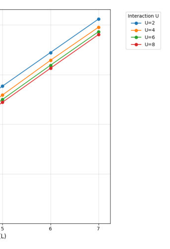
<figcaption class="paper-figure-caption"><b>Fig 1.</b> Figure 1: Exponential scaling of the degrees of freedom parameter 𝑚with respect to the system size for the Fermi-Hubbard model for varying interaction strengths 𝑈, with the hopping amplitude fixed at 𝑡= 1 .</figcaption>
</figure>
<figure class="paper-figure-card">
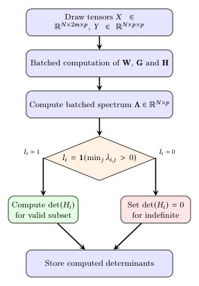
<figcaption class="paper-figure-caption"><b>Fig 2.</b> Figure 2: Comparison of sampling workflows for estimating the conditioned Hessian determinant. The traditional sequential loop (a) introduces multiple loops, whereas the proposed tensor approach (b) does everything in one operation.</figcaption>
</figure>
<figure class="paper-figure-card">
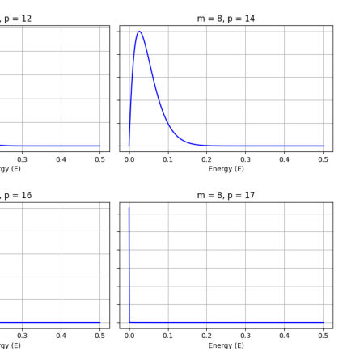
<figcaption class="paper-figure-caption"><b>Fig 3.</b> Figure 3: Theoretical transition in the distribution of local minima across the energy domain. Two distinct regimes can be observed. Note that the 𝑦-axis scales vary across subfigures to best highlight the behavioural change of the local minima.</figcaption>
</figure>
<figure class="paper-figure-card">
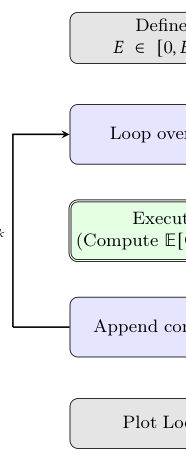
<figcaption class="paper-figure-caption"><b>Fig 4.</b> Figure 4: Global simulation workflow illustrating the energy domain discretisation, iterative grid evaluation via batched sampling, and final density curve reconstruction.</figcaption>
</figure>
<figure class="paper-figure-card">
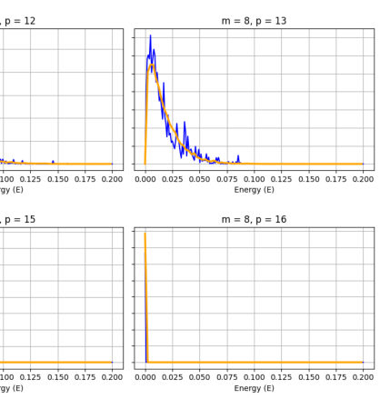
<figcaption class="paper-figure-caption"><b>Fig 5.</b> Figure 5: Expected local minima count for the 𝑚= 8 toy model. The plot illustrates both the phase transition across the critical threshold (𝑝= 14) and the rare-event sampling variance. The blue curves represent a lower sample size (𝑁= 1000), exhibiting severe stochastic noise, while the orange curves (𝑁= 100, 000) converge to a stable distribution.</figcaption>
</figure>
</div>

<p><strong>Summary.</strong> This work theoretically analyzes the trainability of Variational Quantum Algorithms by mapping their loss landscapes to Wishart Hypertoroidal Random Fields. Using the Kac-Rice formula, the authors predict a phase transition governing whether local minima approximate the global minimum. The key finding is that symmetry reduction can artificially lower the effective complexity, enabling the theoretical study of larger quantum systems.</p>
<p><strong>Why it may be interesting.</strong> It provides a rigorous mathematical framework (random field theory) to predict when and how VQAs will fail or succeed in finding ground states, which is crucial for designing practical quantum algorithms.</p>
<details>
<summary>Detailed structure</summary>
<p><strong>Main problem.</strong> The paper analyzes the training efficiency (trainability) of Variational Quantum Algorithms (VQAs) by studying the geometry of their loss landscapes.</p>
<p><strong>Main result.</strong> A phase transition exists in the local minima distribution, where local minima concentrate near the global minimum when the overparameterization factor exceeds a critical threshold.</p>
<p><strong>Method.</strong> The VQA loss landscape is mapped to a Wishart Hypertoroidal Random Field (WHRF), and the distribution of critical points is analyzed using a reformulated Kac-Rice formula.</p>
<p><strong>Model / system.</strong> The analysis uses the Fermi-Hubbard model Hamiltonian, which is mapped onto a VQA cost function $E(	heta)$. The complexity is analyzed on the hypertorus $\mathbb{T}^p$.</p>
<p><strong>Key observables.</strong> Expected number of critical points ($\mathbb{E}[	ext{Crit}]$), the overparameterization factor ($\gamma$), and the degrees of freedom ($m$).</p>
<p><strong>Important parameters / regimes.</strong> The ratio between the problem Hamiltonian degrees of freedom and the number of independent VQA parameters ($p$).</p>
<p><strong>Assumptions / limitations.</strong> The mapping to WHRFs is a statistical model, and the analysis relies on the Kac-Rice formula, which assumes the function is a Morse function.</p>
<p><strong>Figures summary.</strong> Figure 1 shows the exponential scaling of the degrees of freedom parameter $m$ with system size for the Fermi-Hubbard model.</p>
<p><strong>Paper structure.</strong> The paper first establishes the connection between VQA trainability and random field theory, then develops the WHRF framework using the Kac-Rice formula, and finally simulates the phase transition using the Fermi-Hubbard model, proposing symmetry reduction techniques to mitigate exponential scaling.</p>
</details>
<details>
<summary>Abstract</summary>
<p>The training efficiency of Variational Quantum Algorithms (VQAs) is dictated by the geometry of their loss landscapes, which can be formally analysed by mapping these functions to random fields on manifolds. Instead of VQAs, we can then directly study the corresponding random fields, in our case, the Wishart Hypertoroidal Random Fields (WHRFs). We are mostly interested in the distribution of critical points (especially local minima) of WHRFs. For this purpose, the Kac-Rice formula is presented, reformulated, and simulated. The findings identify a phase transition in the distribution of local minima. Beyond a specific threshold, local minima concentrate near the global minimum in function value, meaning that even local minima are good approximators of the global one. The threshold is governed by the ratio between the problem Hamiltonian degrees of freedom and by the number of independent parameters in the VQA. Since the degrees of freedom parameter scales exponentially, we propose symmetry reduction operations to lower the degrees of freedom. This mathematically reduces the dimension, scaling down the required parameter threshold and enabling to solve bigger problems.</p>
</details>
<p><sub><a href="#top">↑ back to top</a></sub></p>

<p><a id="paper-2609.26991"></a></p>
<h3 id="spin-configurations-of-anyonic-excitations-in-moire-fractional-chern-insulators"><a href="http://arxiv.org/abs/2609.26991v1">Spin Configurations of Anyonic excitations in Moiré Fractional Chern Insulators</a></h3>
<p><strong>Authors:</strong> Vadym Apalkov, Tapash Chakraborty<br>
<strong>Type:</strong> theory · <strong>Category:</strong> strongly correlated electrons · <strong>PDF:</strong> <a href="https://arxiv.org/pdf/2609.26991v1">https://arxiv.org/pdf/2609.26991v1</a><br>
<strong>Analysis basis:</strong> full PDF text, analyzed in chunks
<strong>Topic relevance:</strong> <code>analog quantum simulation</code> <strong>3/5</strong> · <code>quantum measurements</code> <strong>1/5</strong></p>
<div class="figure-strip-hint">↔ Scroll figures horizontally</div>
<div class="paper-figures-scroll">
<figure class="paper-figure-card">
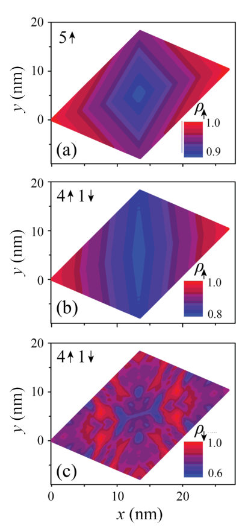
<figcaption class="paper-figure-caption"><b>Fig 1.</b> FIG. 1. Electron density for a 1</figcaption>
</figure>
<figure class="paper-figure-card">
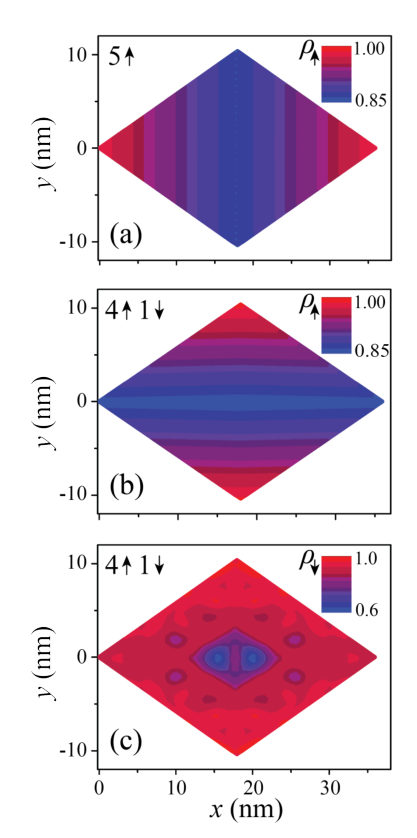
<figcaption class="paper-figure-caption"><b>Fig 2.</b> FIG. 2. Electron density for a 1</figcaption>
</figure>
<figure class="paper-figure-card">
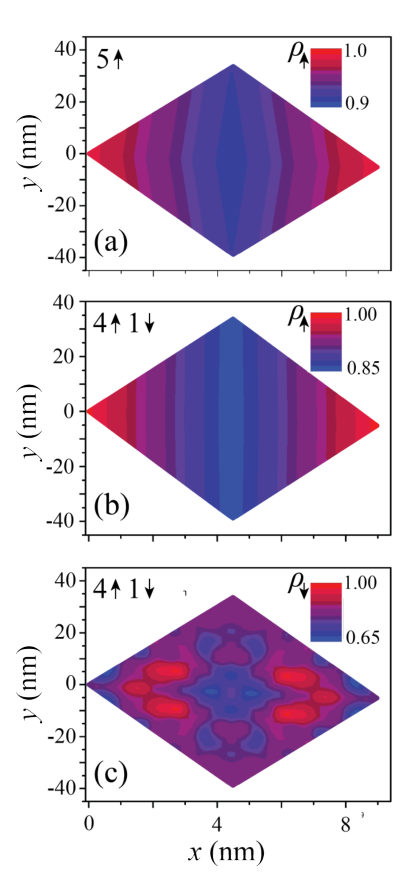
<figcaption class="paper-figure-caption"><b>Fig 3.</b> FIG. 3. Electron density for a 1</figcaption>
</figure>
</div>

<p><strong>Summary.</strong> This theoretical work examines how coupling a fractional Chern insulator in a moiré bilayer to a quantum dot affects its elementary excitations. The authors find that the coupling drives the system towards a spin-unpolarized state, characterized by distinct charge localization patterns in the spin-up versus spin-down components. This work advances the understanding of topological phases in engineered solid-state systems.</p>
<p><strong>Why it may be interesting.</strong> The study bridges concepts from strongly correlated electron physics (FQHE, FCI) with localized quantum structures (QDs), providing insights into how local perturbations can fundamentally alter global topological states.</p>
<details>
<summary>Detailed structure</summary>
<p><strong>Main problem.</strong> The study investigates the nature and spin polarization of elementary excitations (quasiparticles and quasiholes) within a zero-field fractional Chern insulator (FCI).</p>
<p><strong>Main result.</strong> The coupling of the FCI to a quantum dot modifies the excitation spectrum, leading to spin-unpolarized low-energy excitations, particularly for the quasiparticles.</p>
<p><strong>Method.</strong> The analysis employs a finite-size approach using exact diagonalization on a torus, calculating charge densities and energy gaps for various excitation configurations.</p>
<p><strong>Model / system.</strong> The system models a twisted bilayer MoTe2 forming a moiré pattern, which acts as a fractional Chern insulator ($
u=1/3$) coupled to a planar parabolic quantum dot (QD).</p>
<p><strong>Key observables.</strong> Spin polarization ($\Delta E$), charge density localization ($
ho_s(\vec{r})$), and the energy gap of the FCI.</p>
<p><strong>Important parameters / regimes.</strong> Filling factor ($
u=1/3$), QD separation distance ($d_0$), and the presence of single electrons or holes in the QD.</p>
<p><strong>Assumptions / limitations.</strong> The analysis is performed using a low-energy effective Hamiltonian projected onto a single, nearly flat valence band, and it relies on a finite-size approximation.</p>
<p><strong>Figures summary.</strong> Figures illustrate the electron density profiles ($
ho_\uparrow$ and $
ho_\downarrow$) for the FCI state coupled to a QD, showing strong positive charge localization near the QD for the spin-down component.</p>
<p><strong>Paper structure.</strong> The paper develops from establishing the FCI state in the bilayer, to modeling the interaction with the QD via the total Coulomb Hamiltonian, and finally analyzing the resulting spin and charge properties of the excitations.</p>
</details>
<details>
<summary>Abstract</summary>
<p>We have examined the nature of elementary excitations in particular, their spin polarization, in recently discovered zero-field fractional Chern insulator in twisted bilayer MoTe$_2$. We have found that the finite-size bilayer system, in close proximity to a planar parabolic quantum dot containing a single electron (or a hole), forms an incompressible spin-unpolarized fractional Chern insulator at 1/3 filling factor. The corresponding energy gap is found to be large and weakly dependent on the separation between the quantum dot and the bilayer. We predict that in this fractional Chern insulator coupled to a quantum dot, spin-unpolarized quasiparticles and quasiholes are expected to appear as low-energy elementary excitations. The charge density results indicate that, for the spin-unpolarized quasiparticles, the positive charge is strongly localized near the negatively charged QD within the spin-flipped component, whereas for the spin-polarized quasiparticles, such localization is much less pronounced.</p>
</details>
<p><sub><a href="#top">↑ back to top</a></sub></p>

<p><a id="paper-2609.26885"></a></p>
<h3 id="sustained-growth-of-quantum-circuit-complexity-in-many-body-hamiltonian-dynamics"><a href="http://arxiv.org/abs/2609.26885v1">Sustained growth of quantum circuit complexity in many-body Hamiltonian dynamics</a></h3>
<p><strong>Authors:</strong> Wonjun Lee, Saúl Pilatowsky-Cameo, Soonwon Choi<br>
<strong>Type:</strong> theory · <strong>Category:</strong> statistical mechanics · <strong>PDF:</strong> <a href="https://arxiv.org/pdf/2609.26885v1">https://arxiv.org/pdf/2609.26885v1</a><br>
<strong>Analysis basis:</strong> full PDF text, analyzed in chunks
<strong>Topic relevance:</strong> <code>analog quantum simulation</code> <strong>3/5</strong> · <code>scars &amp; prethermalization</code> <strong>1/5</strong></p>
<div class="figure-strip-hint">↔ Scroll figures horizontally</div>
<div class="paper-figures-scroll">
<figure class="paper-figure-card">
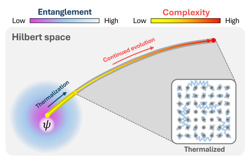
<figcaption class="paper-figure-caption"><b>Fig 1.</b> FIG. 1. Post-thermalization dynamics. An initial prod- uct state ψ evolves under a local Hamiltonian. At thermal- ization, entanglement saturates and the state becomes locally indistinguishable from the Gibbs state, but nevertheless the state continues to evolve. We show that quantum circuit com- plexity continues to grow for a very long period of time, even after the onset of thermalization.</figcaption>
</figure>
<figure class="paper-figure-card">
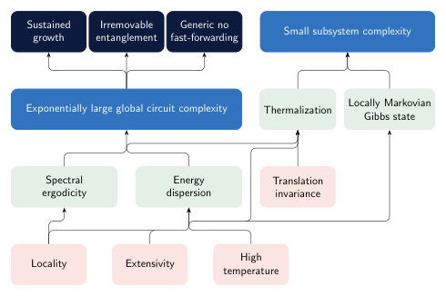
<figcaption class="paper-figure-caption"><b>Fig 2.</b> FIG. 2. Logical structure of the main results. Orange boxes denote assumptions, green boxes denote derived prop- erties, blue boxes denote main results in this work, and dark- blue boxes denote implications of our results.</figcaption>
</figure>
<figure class="paper-figure-card">
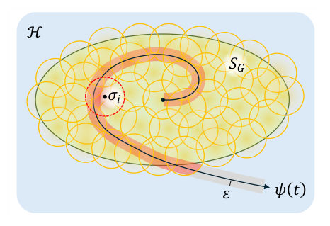
<figcaption class="paper-figure-caption"><b>Fig 3.</b> FIG. 3. Main counting argument. Set SG of states that can be prepared by a sequence of G two-qubit channels (green) and its covering net with states σi (orange circles). The system is initialized in a product state (black circle) which evolves in time (arrow). At time t, the circuit com- plexity is ≤G only if |ψ(t)⟩is within the neighborhood of some σi. We bound the fraction of time that |ψ(t)⟩can spend near a particular σi (red) to be double-exponentially small, so a union bound guarantees that the total time spent inside the green region is double-exponentially small, as long as G is exponential.</figcaption>
</figure>
</div>

<p><strong>Summary.</strong> This paper proves that for generic, energy-conserving quantum systems, the quantum circuit complexity of large subsystems grows exponentially over extremely long timescales, persisting long after the system has reached apparent thermal equilibrium. The result hinges on proving deep structural properties of local Hamiltonians and initial states. It establishes that the dynamics are computationally complex even when the system appears simple locally.</p>
<p><strong>Why it may be interesting.</strong> This work provides a rigorous, non-trivial lower bound on the computational complexity of quantum states generated by local Hamiltonians, extending the understanding of quantum information retention far beyond simple thermalization timescales.</p>
<details>
<summary>Detailed structure</summary>
<p><strong>Main problem.</strong> To determine if the quantum circuit complexity of an evolving many-body quantum system exhibits sustained growth for timescales much longer than the onset of thermalization, particularly for energy-conserving dynamics.</p>
<p><strong>Main result.</strong> The quantum circuit complexity of subsystems in generic local Hamiltonian dynamics is proven to grow exponentially over very long timescales, even after the system appears to have thermalized.</p>
<p><strong>Method.</strong> The proof relies on rigorously establishing two structural properties of generic local Hamiltonians and high-temperature product states: generalized spectral no-resonance conditions and effective support in exponentially many energy eigenstates.</p>
<p><strong>Model / system.</strong> The study concerns many-body quantum systems evolving unitarily under generic, local, time-independent, and extensive Hamiltonians on a Euclidean lattice of qubits.</p>
<p><strong>Key observables.</strong> Quantum Circuit Complexity ($C_\epsilon$), robust volume-law entanglement, and the time scale of complexity growth.</p>
<p><strong>Important parameters / regimes.</strong> High effective temperature ($eta=0$ or $|eta| < eta_c$), subsystem size $|A|$, and the time elapsed $t$.</p>
<p><strong>Assumptions / limitations.</strong> The Hamiltonian must be generic (satisfying spectral no-resonance conditions) and the initial state must be typical (energy dispersed).</p>
<p><strong>Figures summary.</strong> Figure 1 illustrates that circuit complexity continues to grow post-thermalization. Figure 2 summarizes the logical flow connecting assumptions, derived properties, main results, and implications.</p>
<p><strong>Paper structure.</strong> The paper builds by first establishing the necessity of structural properties (spectral conditions, state support) and then using these to prove the exponential growth of complexity (Theorem 1). It contrasts this with saturation for small subsystems and establishes related results like no fast-forwarding.</p>
</details>
<details>
<summary>Abstract</summary>
<p>The quantum circuit complexity of an evolving many-body quantum system is believed to exhibit a sustained growth, maintained for timescales much longer than the onset of thermalization. Most previous works have focused on models which violate energy conservation, such as random unitary circuits. Here we study generic, local time-independent Hamiltonian dynamics. We unconditionally prove that for generic local Hamiltonians and typical initial product states at high effective temperature, the robust quantum circuit complexity must grow over a very long period of time, attaining an exponentially large value at late times. Our approach relies on two structural properties that we prove rigorously: (i) generic local Hamiltonians satisfy generalized spectral no-resonance conditions of arbitrary order, and (ii) typical high-temperature product states are effectively supported in exponentially many energy eigenstates. These properties have been widely assumed without proof in prior works. As corollaries of this result, we show the late-time state displays robust volume-law entanglement that is irremovable by polynomial-size circuits, and we establish a no fast-forwarding result for generic local Hamiltonians. We also lower bound the complexity of preparing sufficiently large subsystems with local quantum channels, in contrast with sufficiently small thermalizing regions which we show retain low complexity at late times.</p>
</details>
<p><sub><a href="#top">↑ back to top</a></sub></p>

<p><a id="paper-2609.26892"></a></p>
<h3 id="transparent-domain-walls-through-information-convex-sets"><a href="http://arxiv.org/abs/2609.26892v1">Transparent Domain Walls through Information Convex Sets</a></h3>
<p><strong>Authors:</strong> Jintae Kim, Amanda Gatto Lamas, Jacopo Gliozzi, Bowen Shi, Taylor L. Hughes, Jong Yeon Lee<br>
<strong>Type:</strong> theory · <strong>Category:</strong> other · <strong>PDF:</strong> <a href="https://arxiv.org/pdf/2609.26892v1">https://arxiv.org/pdf/2609.26892v1</a><br>
<strong>Analysis basis:</strong> full PDF text, analyzed in chunks
<strong>Topic relevance:</strong> <code>analog quantum simulation</code> <strong>3/5</strong> · <code>quantum measurements</code> <strong>1/5</strong></p>
<div class="figure-strip-hint">↔ Scroll figures horizontally</div>
<div class="paper-figures-scroll">
<figure class="paper-figure-card">
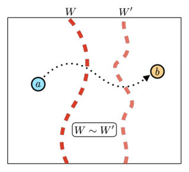
<figcaption class="paper-figure-caption"><b>Fig 1.</b> FIG. 1. Transparent domain walls. Transporting an anyon a along the black dotted line across a transparent do- main wall transmutes a into b, i.e., a →b. The two walls W and W ′ represent physically equivalent choices of the wall po- sition, illustrating that the position of a transparent domain wall is not a physical observable. Thus, a local topological probe cannot detect the wall: any segment of W can be de- formed to W ′ and moved away from the probed region.</figcaption>
</figure>
<figure class="paper-figure-card">
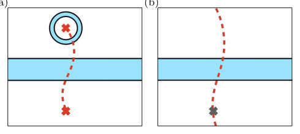
<figcaption class="paper-figure-caption"><b>Fig 2.</b> FIG. 2. (a) Illustration of two point defects (red × symbols) connected by a domain wall (red dotted line) on a torus. The local and noncontractible annuli used in the ICS analysis are also shown. (b) Closed domain wall winding around a non- contractible cycle, obtained by transporting one defect around the torus along a noncontractible cycle. The gray × symbol indicates the disappearance of the two point defects.</figcaption>
</figure>
<figure class="paper-figure-card">
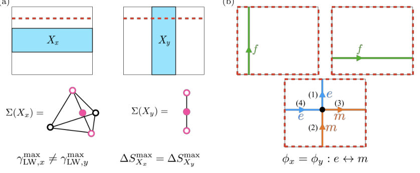
<figcaption class="paper-figure-caption"><b>Fig 3.</b> FIG. 3. (a) Probing transparent domain walls. A transparent domain wall (red dashed line) winds around the x- cycle. The noncontractible annulus Xy crosses the wall, whereas Xx runs parallel to it. The wall modifies Σ(Xy) but leaves Σ(Xx) unchanged, leading to different maximal TEEs for the two annuli. Open pink circles denote extreme points obtained as reductions of MESs, while open black circles denote the remaining ICS extreme points. The filled pink circle marks the equal-weight barycenter of the MES-associated extreme points, representing the symmetrized state. The maximal entanglement asymmetry is the entropy of this barycenter minus that of an MES-associated extreme point. It takes...</figcaption>
</figure>
<figure class="paper-figure-card">
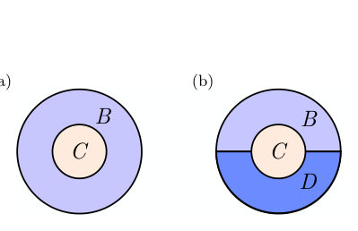
<figcaption class="paper-figure-caption"><b>Fig 4.</b> FIG. 4. Configurations used in axioms (a) A0 and (b) A1.</figcaption>
</figure>
<figure class="paper-figure-card">
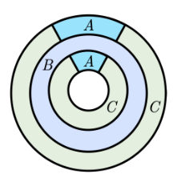
<figcaption class="paper-figure-caption"><b>Fig 5.</b> FIG. 5. Partition of X = ABC used in Definition 3.2.</figcaption>
</figure>
</div>

<p><strong>Summary.</strong> This work introduces an entanglement-bootstrap framework using Information Convex Sets (ICSs) to detect 'transparent domain walls' in 2+1D topological states. By analyzing entanglement on noncontractible annuli, the authors show that global topological invariants, like the GSD, can be extracted without knowing the specific defect structure. This provides a powerful, purely entanglement-based diagnostic tool for characterizing exotic topological order.</p>
<p><strong>Why it may be interesting.</strong> The use of entanglement measures (ICSs) to diagnose global topological features like domain walls, which are otherwise invisible to local measurements, provides a powerful, non-local diagnostic tool for quantum phases.</p>
<details>
<summary>Detailed structure</summary>
<p><strong>Main problem.</strong> The paper aims to characterize 'transparent domain walls' in $(2+1)$-dimensional topologically ordered many-body states, which are invisible to local probes but still affect global properties like Ground State Degeneracy (GSD).</p>
<p><strong>Main result.</strong> The authors develop an entanglement-bootstrap framework using Information Convex Sets (ICSs) on noncontractible annuli to diagnose these walls, showing that maximal entanglement asymmetry ($\Delta S_{\max}^X$) equals $\log 	ext{GSD}$.</p>
<p><strong>Method.</strong> The core method involves using ICSs defined on noncontractible annuli to extract topological information directly from ground state wavefunctions, bypassing the need for explicit defect data.</p>
<p><strong>Model / system.</strong> The study applies to $(2+1)$-dimensional topologically ordered systems, specifically examining fixed points of Abelian topological phases on a torus, with applications to models like Wen's plaquette model and the toric code.</p>
<p><strong>Key observables.</strong> Maximal Topological Entanglement Entropy ($\gamma_{\max}^{LW}$), Maximal Entanglement Asymmetry ($\Delta S_{\max}^X$), and the number of extreme points of the ICS.</p>
<p><strong>Important parameters / regimes.</strong> The system is analyzed on a torus, utilizing two fundamental cycles ($l_x, l_y$) corresponding to noncontractible loops.</p>
<p><strong>Assumptions / limitations.</strong> The analysis assumes the ICS framework faithfully captures the global topological structure, and it compares global effects (ICS) against local diagnostics.</p>
<p><strong>Figures summary.</strong> Figures illustrate the concept of transparent domain walls being undetectable locally, and show the use of noncontractible annuli to probe these walls and reveal joint symmetries.</p>
<p><strong>Paper structure.</strong> The paper introduces the problem of transparent walls, develops the ICS framework using noncontractible annuli, derives fusion rules and entanglement diagnostics ($\gamma_{\max}^{LW}$ vs $\Delta S_{\max}^X$), and concludes by applying the method to specific lattice models.</p>
</details>
<details>
<summary>Abstract</summary>
<p>In $(2+1)$-dimensional topologically ordered many-body states, transparent (topologically deformable) domain walls are invisible to local topological probes, yet can modify the ground state degeneracy (GSD) and transmute anyons transported across them. Here, we develop an entanglement-bootstrap framework using information convex sets (ICSs) on local and noncontractible annuli to extract information about transparent domain walls directly from ground state wavefunctions at fixed points of Abelian topological phases on a torus, without taking categorical defect data as input. We derive fusion rules governing the action of anyons on extreme points of ICSs on noncontractible annuli and determine their quantum dimensions. Extreme points invariant under transport around the complementary cycle correspond one-to-one to minimum entropy states (MESs), and their number equals the GSD. The maximal topological entanglement entropy (TEE), $γ_{\rm LW}^{\max}=\log({D}/d_α)$, probes the net effect of walls crossing the chosen annulus, where ${ D}$ is the total quantum dimension and $d_α$ is the quantum dimension of an extreme point of its ICS. In contrast, the maximal entanglement asymmetry is $ΔS_X^{\max}=\log\mathrm{GSD}$. This value is the same for both annulus orientations and reflects the combined effect of the transparent domain walls. We further show that transparent domain walls can give rise to symmetries supported jointly on the two chosen fundamental cycles that cannot be decomposed into a product of two $1$-form symmetry operators, one supported on each cycle. By relating their action on MESs to anyon tunneling and the fusion rules, we clarify how these symmetries connect distinct ground states. Additionally, we apply the framework to Wen's plaquette model, the anisotropic dipolar toric code, and the rank-2 toric code.</p>
</details>
<p><sub><a href="#top">↑ back to top</a></sub></p>

<p><a id="paper-2609.28469"></a></p>
<h3 id="compressed-permutation-oracles-revisited"><a href="http://arxiv.org/abs/2609.28469v1">Compressed Permutation Oracles Revisited</a></h3>
<p><strong>Authors:</strong> Joseph Carolan, Christian Majenz<br>
<strong>Type:</strong> theory · <strong>Category:</strong> quantum information and computing · <strong>PDF:</strong> <a href="https://arxiv.org/pdf/2609.28469v1">https://arxiv.org/pdf/2609.28469v1</a><br>
<strong>Analysis basis:</strong> full PDF text, analyzed in chunks
<strong>Topic relevance:</strong> <code>quantum measurements</code> <strong>3/5</strong></p>
<div class="figure-strip-hint">↔ Scroll figures horizontally</div>
<div class="paper-figures-scroll">
<figure class="paper-figure-card">
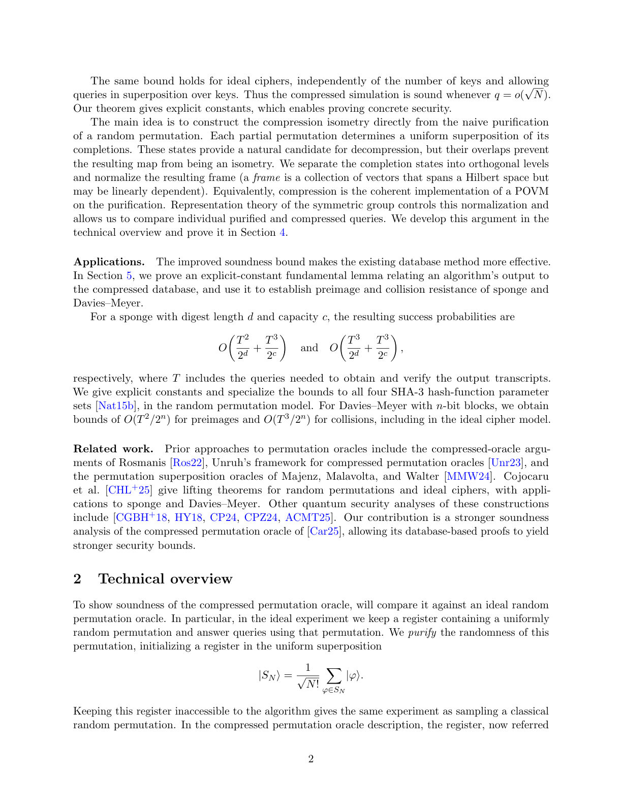
<figcaption class="paper-figure-caption"><b>Fig 1.</b> Low-resolution page preview, page 2</figcaption>
</figure>
<figure class="paper-figure-card">
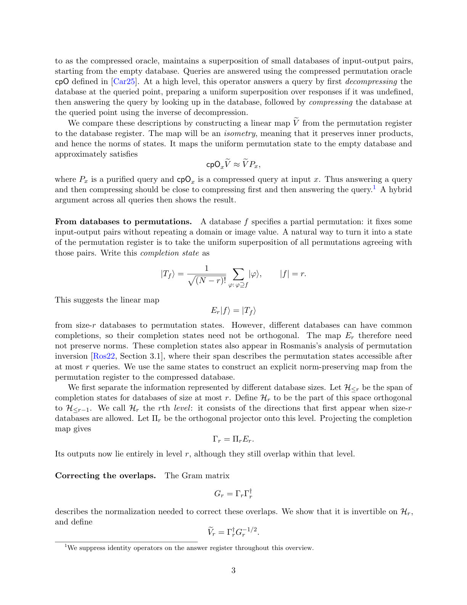
<figcaption class="paper-figure-caption"><b>Fig 2.</b> Low-resolution page preview, page 3</figcaption>
</figure>
<figure class="paper-figure-card">
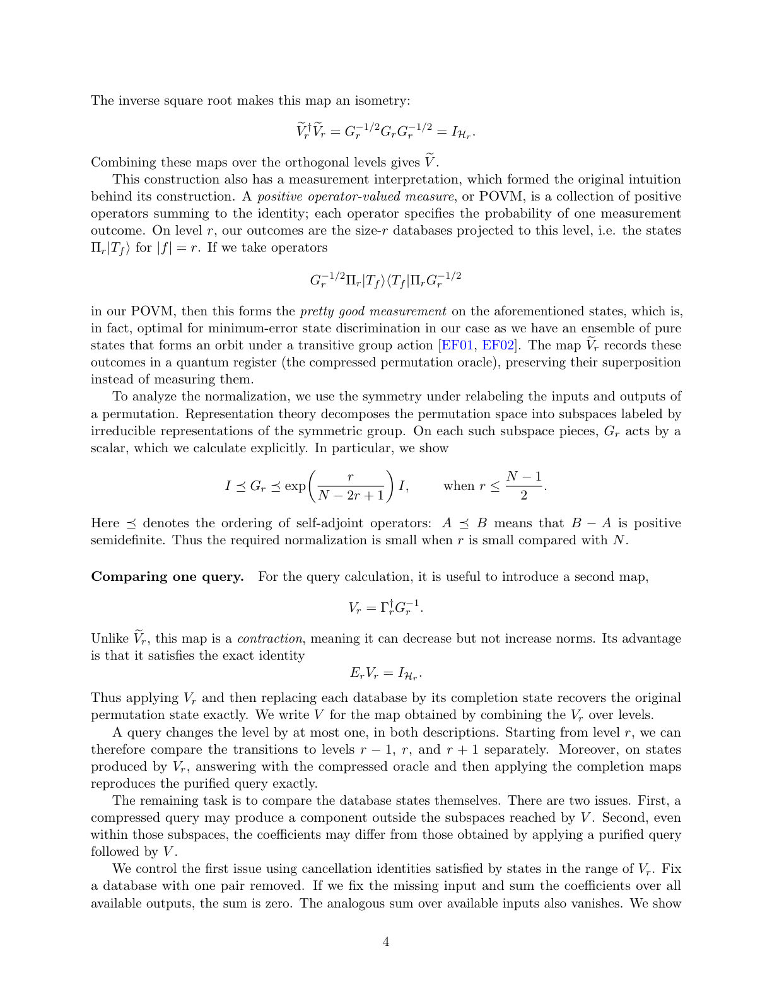
<figcaption class="paper-figure-caption"><b>Fig 3.</b> Low-resolution page preview, page 4</figcaption>
</figure>
<figure class="paper-figure-card">
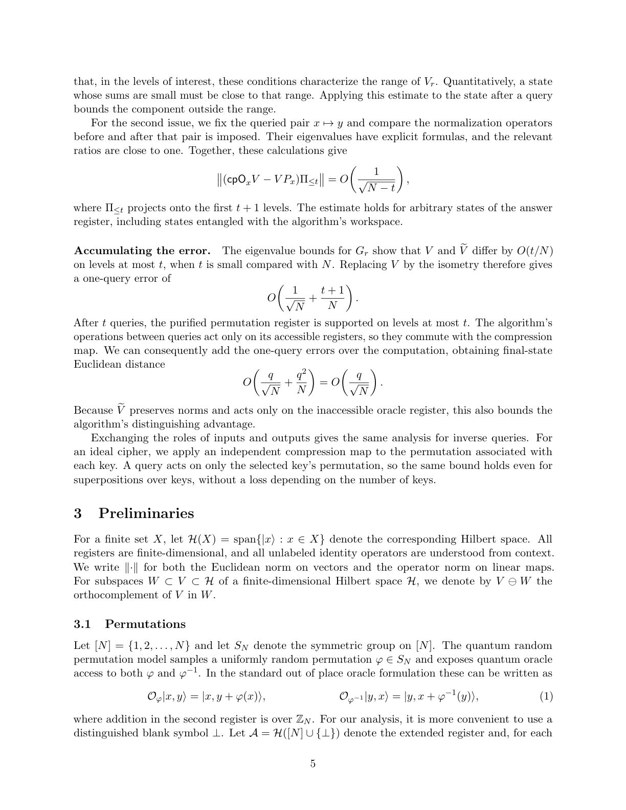
<figcaption class="paper-figure-caption"><b>Fig 4.</b> Low-resolution page preview, page 5</figcaption>
</figure>
<figure class="paper-figure-card">
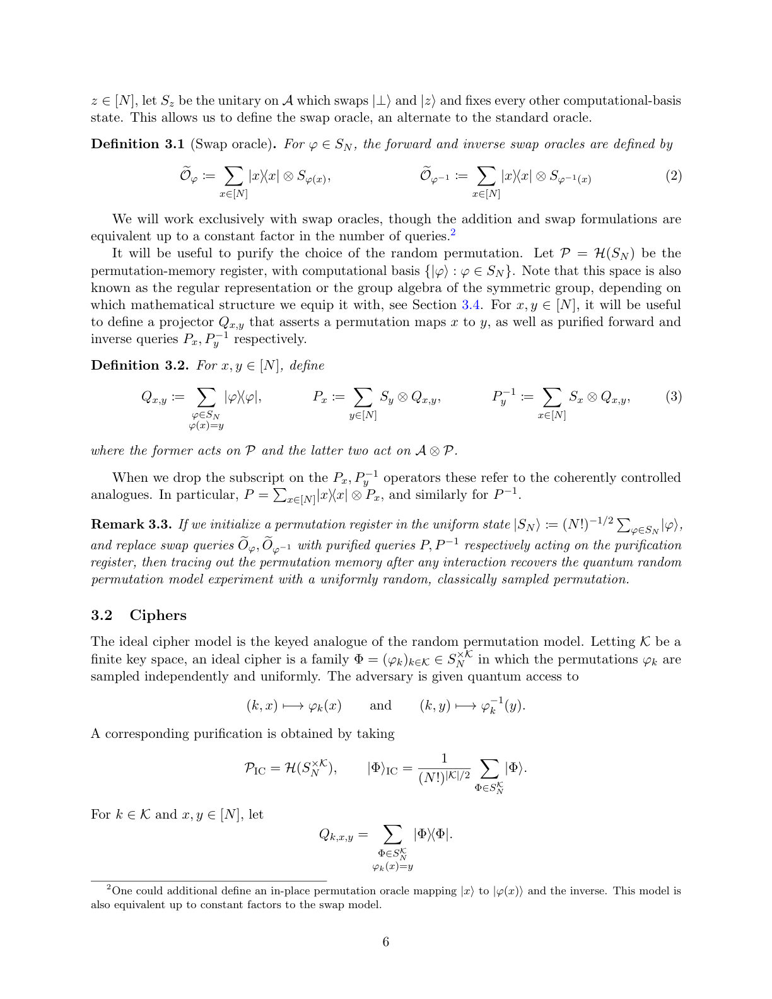
<figcaption class="paper-figure-caption"><b>Fig 5.</b> Low-resolution page preview, page 6</figcaption>
</figure>
</div>

<p><strong>Summary.</strong> This paper significantly improves the theoretical soundness bound for analyzing quantum security using the compressed permutation oracle, raising it to $\Omega(N^{1/2})$. This advancement provides a powerful, general tool for quantum cryptography. It yields concrete, tighter lower bounds for the collision and pre-image resistance of major hash functions like SHA3.</p>
<p><strong>Why it may be interesting.</strong> The techniques developed for analyzing oracle queries and information recovery via isometries are fundamental tools in quantum information theory, applicable to understanding quantum limitations in complex physical systems.</p>
<details>
<summary>Detailed structure</summary>
<p><strong>Main problem.</strong> The paper revisits the analysis of the compressed permutation oracle to improve the soundness bound used in quantum security proofs for cryptographic constructions.</p>
<p><strong>Main result.</strong> The soundness bound is improved from $O(N^{1/12})$ to a tight $\Omega(N^{1/2})$, providing a general-purpose tool for analyzing quantum security.</p>
<p><strong>Method.</strong> The improvement involves constructing the compression isometry from a simple POVM on the naive purification, leading to a conceptually simpler and more direct proof.</p>
<p><strong>Model / system.</strong> The analysis focuses on the compressed permutation oracle, which is used to analyze the quantum security of cryptographic primitives like sponge hash constructions (SHA3) and the Davies-Meyer function.</p>
<p><strong>Key observables.</strong> Soundness bound (query advantage), collision/pre-image lower bounds for hash functions.</p>
<p><strong>Important parameters / regimes.</strong> N (size of the set), q (number of queries), $O(N^{1/2})$ (improved bound).</p>
<p><strong>Assumptions / limitations.</strong> The analysis assumes the underlying primitive can be modeled by a random permutation or ideal cipher, and the final bounds are concrete within the random permutation model.</p>
<p><strong>Figures summary.</strong> Not specified.</p>
<p><strong>Paper structure.</strong> The paper develops the improved soundness theorem by constructing the isometry using Gram matrices and POVMs, then applies this general tool to derive concrete, tight lower bounds for the collision and pre-image resistance of SHA3 and SHA1/SHA2.</p>
</details>
<details>
<summary>Abstract</summary>
<p>The compressed permutation oracle has been used to analyze the quantum security of a number of cryptographic constructions which resisted prior techniques. However, these analyses were fundamentally limited by the poor soundness of the method: the technique was proven sound only up to $O(N^{1/12})$ queries to permutations on $N$ elements. We revisit this analysis, improving the soundness bound to a tight $Ω(N^{1/2})$. In addition to being tighter, our proof is conceptually simpler and more direct, and gives the same bound in the ideal cipher model. The main technical idea is to construct the compression isometry from a simple POVM on the naive purification, a technique which may find wider applications.   As immediate applications, our results yield tight, concrete collision and pre-image lower bounds for the sponge hash construction underlying SHA3 and the Davies--Meyer compression function used in SHA1 and SHA2. More broadly, the improved soundness theorem provides a general-purpose tool for analyzing quantum security in settings where random permutations or ideal ciphers serve as the underlying primitive.</p>
</details>
<p><sub><a href="#top">↑ back to top</a></sub></p>

<p><a id="paper-2609.28120"></a></p>
<h3 id="frustration-free-models-for-topological-holography-fusion-spin-chains-as-boundary-algebras"><a href="http://arxiv.org/abs/2609.28120v1">Frustration-Free Models for Topological Holography: Fusion Spin Chains as Boundary Algebras</a></h3>
<p><strong>Authors:</strong> Zhengwei Liu, Zishuo Zhao<br>
<strong>Type:</strong> theory · <strong>Category:</strong> strongly correlated electrons · <strong>PDF:</strong> <a href="https://arxiv.org/pdf/2609.28120v1">https://arxiv.org/pdf/2609.28120v1</a><br>
<strong>Analysis basis:</strong> full PDF text, analyzed in chunks
<strong>Topic relevance:</strong> <code>analog quantum simulation</code> <strong>3/5</strong></p>
<div class="figure-strip-hint">↔ Scroll figures horizontally</div>
<div class="paper-figures-scroll">
<figure class="paper-figure-card">

<figcaption class="paper-figure-caption"><b>Fig 1.</b> Figure 2: The colored honeycomb lattice Γ: each vertical edge is colored by the chosen object ρ in C.</figcaption>
</figure>
<figure class="paper-figure-card">

<figcaption class="paper-figure-caption"><b>Fig 2.</b> Figure 3: The support of the operator FS defined from a set of generating set of weight k = 3, which occupies two consecutive plaquettes in a row.</figcaption>
</figure>
<figure class="paper-figure-card">

<figcaption class="paper-figure-caption"><b>Fig 3.</b> Figure 4: The parallelogram region in dashed gray has shape (2, 2, s), and the one in dashed blue has shape (3, 1, s).</figcaption>
</figure>
<figure class="paper-figure-card">

<figcaption class="paper-figure-caption"><b>Fig 4.</b> Figure 5: Example: a parallelogram Λ of shape (3, 3) is partitioned into 3 parallelograms of shape (3, 1), ordered from top to bottom.</figcaption>
</figure>
</div>

<p><strong>Summary.</strong> This work constructs a novel class of frustration-free quantum spin models for topological holography using unitary spherical fusion categories. By applying advanced mathematical techniques, the authors demonstrate that the boundary algebra of these 2D systems precisely realizes fusion spin chains. This provides a powerful algebraic framework for understanding topological order in correlated quantum matter.</p>
<p><strong>Why it may be interesting.</strong> The connection between abstract algebraic structures (fusion categories) and concrete physical models (spin chains) that exhibit topological order is highly relevant for understanding emergent quantum phases in condensed matter systems.</p>
<details>
<summary>Detailed structure</summary>
<p><strong>Main problem.</strong> The paper aims to develop frustration-free quantum spin models for Topological Holography by realizing fusion spin chains as boundary algebras.</p>
<p><strong>Main result.</strong> It proves that applying Osterwalder–Schrader reconstruction to specific 2D quantum spin systems yields boundary algebras isomorphic to the fusion spin chains determined by the input unitary spherical fusion category.</p>
<p><strong>Method.</strong> The methodology involves constructing local Hamiltonians on lattices (like the honeycomb lattice) using fusion categories and then employing techniques like reflection positivity and OS reconstruction to determine the boundary structure.</p>
<p><strong>Model / system.</strong> The models are 2D quantum spin systems defined by a unitary spherical fusion category C and an object $\rho$. They generalize Levin-Wen string-net models and feature frustration-free, reflection positive local interactions.</p>
<p><strong>Key observables.</strong> Topological order, ground-state degeneracy, anyonic excitations, and the structure of the boundary algebra.</p>
<p><strong>Important parameters / regimes.</strong> The input unitary spherical fusion category C and the chosen object $\rho$.</p>
<p><strong>Assumptions / limitations.</strong> The models are assumed to be frustration-free and reflection positive; the existence of a uniform gap and the LTQO condition are noted as open questions.</p>
<p><strong>Figures summary.</strong> Figure 1 illustrates two types of interactions (horizontal edge and rectangle) for a qubit system, while Figure 2 shows the colored honeycomb lattice structure.</p>
<p><strong>Paper structure.</strong> The paper builds from defining the general 2D spin system based on a fusion category, detailing the local Hamiltonian construction on the honeycomb lattice, proving the ground state projection via evaluation maps, and finally analyzing the resulting boundary algebra structure using modular automorphism techniques.</p>
</details>
<details>
<summary>Abstract</summary>
<p>We introduce a class of $2d$ quantum spin systems based on a unitary spherical fusion category with a chosen object. These models have frustration-free, reflection positive, but generally non-commuting local interactions, generalizing the Levin-Wen string-net models. Based on the theory developed in arXiv:2510.20662, we explicitly realize the Temperley-Lieb-Jones algebra, and more generally fusion spin chains as their boundary algebras.</p>
</details>
<p><sub><a href="#top">↑ back to top</a></sub></p>

<p><a id="paper-2609.27344"></a></p>
<h3 id="limits-for-molecular-spectroscopy-from-quantum-channel-discrimination"><a href="http://arxiv.org/abs/2609.27344v1">Limits for molecular spectroscopy from quantum channel discrimination</a></h3>
<p><strong>Authors:</strong> Anirban Dey, Akib Karim, Pieter Kok, Mark M. Wilde, Zixin Huang<br>
<strong>Type:</strong> theory · <strong>Category:</strong> other · <strong>PDF:</strong> <a href="https://arxiv.org/pdf/2609.27344v1">https://arxiv.org/pdf/2609.27344v1</a><br>
<strong>Analysis basis:</strong> full PDF text, analyzed in chunks
<strong>Topic relevance:</strong> <code>quantum measurements</code> <strong>3/5</strong></p>
<div class="figure-strip-hint">↔ Scroll figures horizontally</div>
<div class="paper-figures-scroll">
<figure class="paper-figure-card">

<figcaption class="paper-figure-caption"><b>Fig 1.</b> FIG. 1. Molecular absorption spectroscopy: different molecules correspond to different frequency-dependent loss channels. Three strategies for quantum channel discrimi- nation. (a) Unentangled probes are sent through the chan- nel and measured independently. (b) Entanglement-assisted probes, with a joint measurement on each output–reference pair but separable measurements across channel uses. This is the near-term-compatible setting emphasized in this work. (c) Fully entanglement-assisted strategies across many output– reference systems can potentially achieve a higher error expo- nent but can require collective measurements.</figcaption>
</figure>
<figure class="paper-figure-card">

<figcaption class="paper-figure-caption"><b>Fig 2.</b> FIG. 2. Infrared absorption data [32] used to define the multi-frequency molecular channel. The plot shows nor- malised absorbance spectra for the molecules of interest over the mid-infrared range. For the multi-frequency examples, we select three representative 4-nitrophenol absorption fea- tures at 6.502 µm, 7.407 µm, and 7.874 µm. The table gives the normalised absorbance of each molecule at these wave- lengths. The strongest 4-nitrophenol feature, at 7.407 µm, is set to unity to be the reference signal strength η⋆, while the other frequency modes are scaled accordingly.</figcaption>
</figure>
<figure class="paper-figure-card">

<figcaption class="paper-figure-caption"><b>Fig 3.</b> FIG. 3. The measured relative entropy as a function of the signal transmissivity ηM, for E = 2. (Left) The chan- nel consists of signal-dependent loss together with dephas- ing, with dephasing parameter γ = 0.01. (Right) The same loss–dephasing channel is combined with baseline random- loss, modelled by a uniformly distributed transmissivity with ϵf = 0.05. The results shown are: coherent state (orange dashed line), coherent state with photon counting (red dashed line), TMSV (purple dotted line), Fock state (blue solid line) and optimal state (green dotted-dashed line).</figcaption>
</figure>
<figure class="paper-figure-card">

<figcaption class="paper-figure-caption"><b>Fig 4.</b> FIG. 4. (Left) Measured relative entropy for three-frequency detection of 4-nitrophenol. The channel includes random-loss with ϵf = 0.05, and dephasing with γ = 0.01. The results shown are: coherent state (orange dashed line), TMSV (pur- ple dotted line), Fock state (blue solid line) and optimal state (green dotted-dashed line). The optimisation uses a Fock- space truncation d = 7. (Right) The measured relative en- tropy ratio between different states and the coherent state; the coherent state is equal to 1 on this plot.</figcaption>
</figure>
<figure class="paper-figure-card">

<figcaption class="paper-figure-caption"><b>Fig 5.</b> FIG. 5. Photon-number populations p(n) = ⟨n|ρ⋆ A|n⟩of the optimal reduced probe state at the 7.407 µm absorption line, calculated with a Fock-space truncation d = 7 (nmax = 6).</figcaption>
</figure>
</div>

<p><strong>Summary.</strong> This work establishes the ultimate quantum limit for molecular spectroscopy by framing it as a quantum channel discrimination problem. Using semidefinite programming, the authors show that non-classical light sources can significantly improve detection sensitivity over standard laser methods. This framework is highly relevant for quantum optics and AMO physics as it sets fundamental performance boundaries for chemical sensing.</p>
<p><strong>Why it may be interesting.</strong> It provides rigorous, quantum-limited benchmarks for spectroscopic techniques, directly connecting fundamental quantum information theory (channel discrimination) to practical molecular physics measurements.</p>
<details>
<summary>Detailed structure</summary>
<p><strong>Main problem.</strong> The paper develops a general quantum framework to determine the ultimate theoretical limit for molecular absorption spectroscopy.</p>
<p><strong>Main result.</strong> Optimized non-classical quantum probes can significantly outperform conventional laser spectroscopy, and this advantage remains robust even when accounting for realistic background random losses.</p>
<p><strong>Method.</strong> The problem is formulated as an asymmetric quantum hypothesis testing task, solved using semidefinite programming (SDP) to maximize the measurable quantum channel relative entropy.</p>
<p><strong>Model / system.</strong> The system models molecular identification via absorption spectroscopy, treating the process as distinguishing between a null channel (background loss) and an alternative channel (target molecule absorption). The analysis extends to multi-frequency measurements using product state assumptions.</p>
<p><strong>Key observables.</strong> The measurable quantum channel relative entropy, D_M(N||M), which quantifies the distinguishability between the null and alternative absorption channels.</p>
<p><strong>Important parameters / regimes.</strong> The total available photon number budget (E) and the spectral frequencies (s) across which the measurement is performed.</p>
<p><strong>Assumptions / limitations.</strong> The background loss is modeled as a random-loss channel, and the analysis often relies on product state assumptions for multi-frequency measurements.</p>
<p><strong>Figures summary.</strong> Figure 1 illustrates different quantum channel discrimination strategies (unentangled vs. entangled probes). Figure 2 shows normalized absorbance spectra for several molecules across the mid-infrared range, defining the spectral channels.</p>
<p><strong>Paper structure.</strong> The paper builds from the general quantum hypothesis testing framework to specific SDP formulations for single and multi-frequency measurements, culminating in joint optimization techniques to handle complex contaminant scenarios.</p>
</details>
<details>
<summary>Abstract</summary>
<p>Absorption spectroscopy identifies molecules by detecting frequency-dependent optical loss, and its fundamental limit is a quantum channel-discrimination problem. In this work, we develop a general framework for characterizing the ultimate quantum limit of molecular absorption spectroscopy without collective measurements: we formulate it as an asymmetric quantum hypothesis testing task between different absorption channels. Using a semidefinite-programming formulation, we construct optimal probe states and compare them with coherent-state photon counting, Fock states, and two-mode squeezed vacuum probes. We introduce a random-loss channel model for imperfectly known background transmission, reflecting the fact that a blank experiment need not return all incident photons due to scattering, solvent absorption, or collection losses. Our results show that optimized non-classical probes can substantially outperform conventional laser spectroscopy, and that the advantage is robust to realistic baseline random loss. % In multi-frequency spectroscopy, the optimization also determines how photons should be allocated across absorption lines, revealing an additional resource-allocation advantage beyond single-mode state engineering. We illustrate our framework using infrared detection of 4-nitrophenol against chemically relevant comparison molecules, showing how quantum channel-discrimination methods provide constructive performance limits for molecular spectroscopy under realistic photon constraints.</p>
</details>
<p><sub><a href="#top">↑ back to top</a></sub></p>

<p><a id="paper-2609.27177"></a></p>
<h3 id="sample-efficient-tomography-of-a-class-of-mixed-states-with-extensive-entanglement-and-magic"><a href="http://arxiv.org/abs/2609.27177v1">Sample-Efficient Tomography of a Class of Mixed States with Extensive Entanglement and Magic</a></h3>
<p><strong>Authors:</strong> Pengcheng Liao, Quntao Zhuang<br>
<strong>Type:</strong> theory · <strong>Category:</strong> quantum information and computing · <strong>PDF:</strong> <a href="https://arxiv.org/pdf/2609.27177v1">https://arxiv.org/pdf/2609.27177v1</a><br>
<strong>Analysis basis:</strong> full PDF text, analyzed in chunks
<strong>Topic relevance:</strong> <code>quantum measurements</code> <strong>3/5</strong></p>
<div class="figure-strip-hint">↔ Scroll figures horizontally</div>
<div class="paper-figures-scroll">
<figure class="paper-figure-card">

<figcaption class="paper-figure-caption"><b>Fig 1.</b> FIG. 1. Schematic of the CEBP state class and learning protocol. (a) A CEBP state is obtained by applying an unknown Clifford unitary UC to a product of local blocks ρa, each supported on at most d qubits. The local blocks may be mixed and magical, while the Clifford encoding can generate a highly entangled global state. (b) The learner combines Bell measurements on many pairs of copies with joint measurements of commuting Pauli tuples on fresh single copies. The former are used to estimate |Tr(ρP)|2, while the latter provide the signed moments required for cumulant grouping. Classical postprocessing combines these data to construct a decoding Clifford eU † C. Applying the learned decoder...</figcaption>
</figure>
<figure class="paper-figure-card">

<figcaption class="paper-figure-caption"><b>Fig 2.</b> FIG. 2. Schematic of the CEBP tomography protocol. Starting from an unknown CEBP state ρ and a known upper bound d on the hidden block size, the learner first peels approximate stabilizer directions, recovering g1, . . . , gt, Ustab, and λ, and then performs rank-guided recovery of the visible single-block Pauli sectors G. For d = 1, each recovered sector forms its own empirical block, whereas for d ≥2 cumulant grouping merges dependent sectors to obtain the empirical partition bC. A simultaneous Clifford localization maps the recovered Pauli algebras to disjoint registers {JC} and Jaux. Final estimation recovers the syndrome bb and the localized marginals {bνC}, which are assembled into...</figcaption>
</figure>
<figure class="paper-figure-card">

<figcaption class="paper-figure-caption"><b>Fig 3.</b> FIG. 3. Sample complexity of CEBP tomography versus local-Pauli linear inversion (LP-LI). For each (n, d), we generate 20 independent CEBP target states. The n qubits are partitioned into blocks of maximum size d, with d = 1 corresponding to (1, . . . , 1), d = 2 to (2, . . . , 2, 1/2) with a final one-qubit block when n is odd, and d = 3 to (3, . . . , 3, 1/2/3) with a final block of size one or two when required. For each block, the density matrix is sampled independently from the Hilbert–Schmidt ensemble using a normalized complex Ginibre matrix [29], and the resulting block-product state is encoded by a random Clifford circuit generated by a nonuniform 5n-step random walk over Hadamard,...</figcaption>
</figure>
</div>

<p><strong>Summary.</strong> This paper develops a sample-efficient quantum state tomography protocol for a specific class of mixed states called CEBP states. By exploiting the underlying, hidden block-product structure, the authors demonstrate that the required number of quantum copies scales polynomially with system size $n$ for a fixed block size $d$. This suggests that structural complexity, rather than just entanglement, dictates the learnability of quantum states.</p>
<p><strong>Why it may be interesting.</strong> This work provides a powerful theoretical framework showing that structural constraints (like bounded block size) can drastically reduce the resource scaling required for quantum state characterization, even when the physical state appears highly complex (entangled and magical).</p>
<details>
<summary>Detailed structure</summary>
<p><strong>Main problem.</strong> The paper addresses the challenge of performing sample-efficient quantum state tomography for mixed quantum states that possess both extensive entanglement and extensive magic.</p>
<p><strong>Main result.</strong> They prove that for a structured class of states called CEBP states, tomography can be achieved using a number of copies polynomial in the system size $n$ when the hidden block size $d$ is fixed.</p>
<p><strong>Method.</strong> The protocol combines Bell measurements on pairs of copies to estimate Pauli correlations with single-copy measurements of commuting observables to recover the latent block structure.</p>
<p><strong>Model / system.</strong> The focus is on Clifford-encoded block-product (CEBP) states, $
ho = U_c (igotimes_{a=1}^K 
ho_a) U_c^\dagger$, where the state is built from local mixed states ($
ho_a$) via an unknown global Clifford unitary ($U_c$).</p>
<p><strong>Key observables.</strong> Pauli expectation values, squared Pauli expectation values ($|	ext{Tr}(
ho P)|^2$), and mixed cumulants of commuting Pauli observables.</p>
<p><strong>Important parameters / regimes.</strong> The upper bound $d$ on the hidden block size, the target error $\epsilon$, and the failure probability $\delta$.</p>
<p><strong>Assumptions / limitations.</strong> The primary assumption is the existence of a known, bounded upper limit $d$ on the size of the latent blocks, and the protocol requires fresh, independent pools of copies for different measurement stages.</p>
<p><strong>Figures summary.</strong> Figure 1 schematically illustrates the CEBP state formation and the multi-stage tomography protocol. Figure 2 details the five constructive stages of the tomography protocol, including resource budgets for different measurement types.</p>
<p><strong>Paper structure.</strong> The paper first defines the CEBP state model and the tomography task. It then details a multi-stage protocol involving Bell-sampling for initial structural identification (peeling), followed by residual sector recovery using single-copy measurements and cumulant analysis to localize the hidden blocks, culminating in local tomography.</p>
</details>
<details>
<summary>Abstract</summary>
<p>Full tomography of a generic many-qubit quantum state requires exponentially many copies, while suitable structural constraints can make reconstruction sample-efficient. Existing approaches exploit, for example, limited entanglement structure, low magic, or constrained state-preparation circuits. Here we consider a class of mixed states that can simultaneously exhibit extensive entanglement and extensive magic. Specifically, we introduce Clifford-encoded block-product (CEBP) states, obtained by applying an unknown global Clifford unitary to a tensor product of arbitrary mixed states supported on unknown blocks of bounded size. We show that, for a fixed block size, CEBP states can be reconstructed using polynomially many copies by exploiting Clifford-preserved Pauli correlations to recover the latent structure and reduce the remaining problem to local tomography. Our result demonstrates that sample-efficient tomography can arise from bounded complexity in a latent frame even when the physical state is highly entangled, highly magical, and mixed, and suggests complexity modulo structured transformations as a broader organizing principle for quantum-state learnability.</p>
</details>
<p><sub><a href="#top">↑ back to top</a></sub></p>

<p><a id="paper-2609.28440"></a></p>
<h3 id="sharp-pairwise-reduction-for-quantum-hypothesis-testing"><a href="http://arxiv.org/abs/2609.28440v1">Sharp pairwise reduction for quantum hypothesis testing</a></h3>
<p><strong>Authors:</strong> Kuan-Yi Lee, Ludovico Lami<br>
<strong>Type:</strong> theory · <strong>Category:</strong> quantum information and computing · <strong>PDF:</strong> <a href="https://arxiv.org/pdf/2609.28440v1">https://arxiv.org/pdf/2609.28440v1</a><br>
<strong>Analysis basis:</strong> full PDF text, analyzed in chunks
<strong>Topic relevance:</strong> <code>quantum measurements</code> <strong>3/5</strong></p>
<div class="figure-strip-hint">↔ Scroll figures horizontally</div>
<div class="paper-figures-scroll">
<figure class="paper-figure-card">

<figcaption class="paper-figure-caption"><b>Fig 1.</b> Low-resolution page preview, page 2</figcaption>
</figure>
<figure class="paper-figure-card">

<figcaption class="paper-figure-caption"><b>Fig 2.</b> Low-resolution page preview, page 3</figcaption>
</figure>
<figure class="paper-figure-card">

<figcaption class="paper-figure-caption"><b>Fig 3.</b> Low-resolution page preview, page 4</figcaption>
</figure>
<figure class="paper-figure-card">

<figcaption class="paper-figure-caption"><b>Fig 4.</b> Low-resolution page preview, page 5</figcaption>
</figure>
<figure class="paper-figure-card">

<figcaption class="paper-figure-caption"><b>Fig 5.</b> Low-resolution page preview, page 6</figcaption>
</figure>
</div>

<p><strong>Summary.</strong> This work establishes a sharp, universal bound for quantum hypothesis testing, showing that the error in distinguishing multiple quantum states can be bounded by four times the sum of the errors from all possible pairs of states. The authors achieve this using advanced matrix analysis techniques and prove the constant four is optimal using a specific ensemble. This provides a significant theoretical improvement over previous bounds in the field.</p>
<p><strong>Why it may be interesting.</strong> The rigorous determination of universal constants in quantum information theory provides fundamental benchmarks for quantum measurement protocols, which are crucial for designing quantum communication and sensing schemes.</p>
<details>
<summary>Detailed structure</summary>
<p><strong>Main problem.</strong> The paper determines the optimal universal coefficient required to bound the error probability of global quantum hypothesis testing by the sum of optimal pairwise binary error probabilities.</p>
<p><strong>Main result.</strong> It proves that the global error probability is bounded by at most four times the sum of the optimal pairwise binary error probabilities, and this coefficient of four is shown to be optimal.</p>
<p><strong>Method.</strong> The proof employs purely matrix-analytic techniques, including direct block Gram matrix analysis and utilizing a refined inequality between quantum Hellinger distance and Bures $\chi^2$-divergence.</p>
<p><strong>Model / system.</strong> The analysis concerns quantum hypothesis testing involving an ensemble of quantum states $\{p_i, 
ho_i\}$ in arbitrary Hilbert space dimensions. Sharpness is demonstrated using a regular-simplex ensemble.</p>
<p><strong>Key observables.</strong> Global measurement error ($    ext{Err}<em ext_binary="ext{binary">{  ext{global}}$) and optimal pairwise binary error ($ ext{Err}</em>$).}</p>
<p><strong>Important parameters / regimes.</strong> The universal coefficient $C$ in the bound $    ext{Err}<em ext_binary="ext{binary">{  ext{global}} \le C \sum     ext{Err}</em>$.}</p>
<p><strong>Assumptions / limitations.</strong> The analysis relies on the structure of the Pretty Good Measurement (PGM) and its relationship to pairwise terms.</p>
<p><strong>Paper structure.</strong> The paper develops the bound by first simplifying the global error term using superoperators and block Gram representations, then linking this structure to known binary error bounds, culminating in the sharp bounds for the global PGM error.</p>
</details>
<details>
<summary>Abstract</summary>
<p>We determine the optimal universal coefficient in a reduction of multiple to binary quantum hypothesis testing. Specifically, for every finite ensemble in any Hilbert space dimension (finite or infinite), we prove that the error probability of the global pretty good measurement (PGM) is at most four times the sum of the optimal binary error probabilities. By constructing a family of regular-simplex ensembles, we further show that the coefficient four is optimal, even for arbitrary global measurements. This result improves on the pairwise bounds established by Cheng and Liu [arXiv:2606.06246 (2026)] and entails an explicit, sharp guarantee for the standard PGM itself. Our proof is also simpler: rather than constructing sequential measurements and applying a union bound, our proof relies on purely matrix-analytic techniques, combining a direct block Gram matrix analysis of the PGM error and a refined inequality between quantum Hellinger distance and Bures $χ^2$-divergence. Our analysis also yields a refined, one-shot pairwise Chernoff bound and explicit sufficient number of copies for a desired discrimination error.</p>
</details>
<p><sub><a href="#top">↑ back to top</a></sub></p>

<p><a id="paper-2609.27629"></a></p>
<h3 id="structured-hamiltonian-learning-for-multiqubit-conditional-phase-gates"><a href="http://arxiv.org/abs/2609.27629v1">Structured Hamiltonian Learning for Multiqubit Conditional Phase Gates</a></h3>
<p><strong>Authors:</strong> Xiu-Hao Deng<br>
<strong>Type:</strong> theory · <strong>Category:</strong> quantum information and computing · <strong>PDF:</strong> <a href="https://arxiv.org/pdf/2609.27629v1">https://arxiv.org/pdf/2609.27629v1</a><br>
<strong>Analysis basis:</strong> full PDF text, analyzed in chunks
<strong>Topic relevance:</strong> <code>quantum measurements</code> <strong>3/5</strong></p>
<div class="figure-strip-hint">↔ Scroll figures horizontally</div>
<div class="paper-figures-scroll">
<figure class="paper-figure-card">

<figcaption class="paper-figure-caption"><b>Fig 1.</b> FIG. 1. Target-relative structured Hamiltonian learning. (a) The allowed group is fixed as part of the target contract. Global multiplicative invariants decide class membership; a selected logarithm supplies local generator coordinates for feedback. (b) Gate/reference Ramsey counts give edge phases; graph integration gives the phase field, followed by both the global Möbius audit and the local Walsh transform. Generator coordinates are reported for feedback only after the model-validity checks pass. (c) The support-membership rows make the incompleteness explicit: for two controls and two targets, S∗= {c2, t1, t2} is forbidden under G≤2 but contains neither complete target face, so both...</figcaption>
</figure>
<figure class="paper-figure-card">

<figcaption class="paper-figure-caption"><b>Fig 2.</b> FIG. 2. Global-quotient and acquisition checks. (a) Principal phases of the allowed dressing in the CCCZ alias regression: a local logarithm reports a spurious four-body coefficient, while the branch-independent invariant passes. (b) Gauge-aligned phase-map RMSE for end-to-end multiplexed and separately compiled statewise acquisition under a common nominal attempted-circuit budget. Points and error bars are the mean and sample SD of the per-map RMSE across 200 independent replicates; they are not standard errors. (c) Rejection rates for the allowed-only control and the blind-defect alternative over 300 replicates. Vertical intervals are score-Wilson 95% binomial intervals computed from the...</figcaption>
</figure>
<figure class="paper-figure-card">

<figcaption class="paper-figure-caption"><b>Fig 3.</b> FIG. 3. Complexity and noise validation. (a) Exact equation (51) (solid line) and sample variances from 1500 saved replicate-level estimates (points). Dashed lines are the prespecified 0.85–1.15 ratio criterion, not uncertainty bars. (b) Analytic information per attempted circuit and empirical inverse variance, each normalized by the analytic maximum. Blue and green vertical lines mark the predicted integer optima q = 12 (Markov) and q = 6 (quasi-static); empirical optima are 11 and 6. Lines are analytic and points are empirical. (c) Face-noise variance normalized by σ2 for independent and sign-aligned Gaussian covariance; points use 3000 replicates and lines are 2m and 4m. Common-mode...</figcaption>
</figure>
<figure class="paper-figure-card">

<figcaption class="paper-figure-caption"><b>Fig 4.</b> FIG. 4. Count-level observation-model validation. (a) Full-spectrum versus target-face rejection in the representative C1Z⊗2</figcaption>
</figure>
<figure class="paper-figure-card">

<figcaption class="paper-figure-caption"><b>Fig 5.</b> FIG. 5. Central-spin learning-to-control simulation. S and Q denote strict and quotient-aware objectives. (a,b) Bars are mean changes and error bars are the sample standard deviation—not the standard error—over the same 30 prespecified training replicates; the deterministic pre-update simulator value is common to those replicates. The visibly different error-bar sizes follow directly from the stored replicate outcomes. (c) Deterministic finite-difference Jacobian sensitivities; triangles are selected-tone-phase negative controls below the prespecified sensitivity floor. The simulated system and Jacobian use the same conditional-block model, so this is not a model-robust or hardware...</figcaption>
</figure>
</div>

<p><strong>Summary.</strong> This paper develops a sophisticated theoretical framework to certify the global equivalence class of multiqubit conditional phase gates, addressing the limitation that local measurements are insufficient for this task. It introduces multiplicative Boolean-Möbius invariants as a branch-independent criterion for global membership. The work is highly relevant for quantum computing hardware certification by providing a robust diagnostic tool.</p>
<p><strong>Why it may be interesting.</strong> This work provides a mathematically rigorous framework for certifying the global equivalence class of quantum gates, moving beyond simple local fidelity checks which are known to be insufficient.</p>
<details>
<summary>Detailed structure</summary>
<p><strong>Main problem.</strong> The core problem is determining if a measured multiqubit conditional phase gate belongs to its declared generalized-gate equivalence class, distinguishing global equivalence from local measurement outcomes.</p>
<p><strong>Main result.</strong> The authors derived an exact, branch-independent criterion for global equivalence using multiplicative Boolean-Möbius invariants, and demonstrated that local measurements are insufficient to guarantee global membership.</p>
<p><strong>Method.</strong> The methodology combines Ramsey measurements to reconstruct a target-relative eigenphase map, followed by applying a Walsh transform to yield the error generator, and finally using Möbius invariants for a global class membership test.</p>
<p><strong>Model / system.</strong> The system involves multiqubit conditional phase gates, modeled by a structured Hamiltonian representing a diagonal successful block in a known basis. The analysis focuses on the error generator $    ext{Herr}$ and its relationship to the target-relative unitary $U_{	ext{err}}$.</p>
<p><strong>Key observables.</strong> Multiplicative Boolean-Möbius invariants ($    ext{M}_T[u]$), the relative phase $\epsilon(z)$, and the mean phase-map RMSE from multiplexed acquisition.</p>
<p><strong>Important parameters / regimes.</strong> The number of qubits ($m$), the number of multiplexing settings ($M=3, 4, 5$), and specified tolerances/confidence levels for statistical decision-making.</p>
<p><strong>Assumptions / limitations.</strong> The results estimate the error generator under a specified acquisition model, and the method explicitly separates global equivalence-class membership from the local error generator estimation.</p>
<p><strong>Figures summary.</strong> Figure 1 illustrates the structured Hamiltonian learning process, showing how global invariants fix the allowed group, Ramsey counts yield local phases via a Walsh chart, and target faces can miss forbidden interactions.</p>
<p><strong>Paper structure.</strong> The paper progresses from defining the global equivalence problem (Möbius invariants) to local estimation (Ramsey/Walsh transforms) and culminates in rigorous statistical bounds (Cramér-Rao) and a multi-step experimental protocol for deployment.</p>
</details>
<details>
<summary>Abstract</summary>
<p>Accurate measurement of an intended conditional phase does not by itself place a multiqubit phase gate in its declared generalized-gate equivalence class. We cast the diagnosis as structured Hamiltonian learning of the diagonal successful block in a known basis: Ramsey measurements on a connected graph reconstruct a target-relative eigenphase map; a Walsh transform then yields the per-cycle stroboscopic error generator in a selected logarithm branch, whose branch-dependent coefficients alone cannot decide global equivalence. For diagonal Pauli-Z dressing of weight at most m we derive an exact branch-independent criterion from multiplicative Boolean-Mobius invariants, converted at finite shot counts into a pass/fail/unresolved decision under prespecified tolerances and simultaneous confidence, separate from model rejection. For shared-control C^mZ gates a circular target-face contrast isolates each intended conditional phase, yet a support theorem exhibits forbidden interactions invisible to every target face once multiple targets or external spectators are present. We derive a Cramer-Rao bound for arbitrary integer phase contrasts, recovering the 4^m attempted-circuit scaling of a uniform (m+1)-body face, and quantify degradation from visibility loss, heralded survival, readout confusion, and correlated noise, while systematic bias triggers model rejection. Seeded simulations implement the 4M-setting multiplexed acquisition end to end: for M=3,4,5 at a common budget its mean phase-map RMSE is 0.689-0.794 times a separately compiled statewise scan, and a blind-interaction test yields 300/300 global-audit rejections versus 1/300 for target faces. These results estimate the error generator of a diagonal successful block under a specified acquisition model; they are not unknown-basis Hamiltonian identification, arbitrary-channel tomography, or hardware certification.</p>
</details>
<p><sub><a href="#top">↑ back to top</a></sub></p>

<p><a id="paper-2609.28287"></a></p>
<h3 id="decoherence-tuning-in-voltage-driven-plasmonic-cavities"><a href="http://arxiv.org/abs/2609.28287v1">Decoherence Tuning in Voltage-Driven Plasmonic Cavities</a></h3>
<p><strong>Authors:</strong> Yuchen Wang, Oliver Tan, Norah M. Hoffmann<br>
<strong>Type:</strong> theory · <strong>Category:</strong> other · <strong>PDF:</strong> <a href="https://arxiv.org/pdf/2609.28287v1">https://arxiv.org/pdf/2609.28287v1</a><br>
<strong>Analysis basis:</strong> full PDF text, analyzed in chunks
<strong>Topic relevance:</strong> <code>Keldysh / 2PI / non-Gaussian methods</code> <strong>2/5</strong> · <code>methods for driven-dissipative</code> <strong>2/5</strong> · <code>Tavis-Cummings &amp; cavity-many-emitter</code> <strong>1/5</strong> · <code>analog quantum simulation</code> <strong>1/5</strong> · <code>correlated / nonlocal dissipation</code> <strong>1/5</strong> · <code>driven-dissipative phase transition</code> <strong>1/5</strong> · <code>quantum measurements</code> <strong>1/5</strong></p>
<div class="figure-strip-hint">↔ Scroll figures horizontally</div>
<div class="paper-figures-scroll">
<figure class="paper-figure-card">

<figcaption class="paper-figure-caption"><b>Fig 1.</b> FIG. 1. (a) Schematic representation of a typical STM-BJ experimental setup. (b) Calculated absorption spectra of BP and the Au20–BP–Au20 molecular junction. (c) Molecular orbital character analysis of the HOMO–LUMO transition in the Au20– BP–Au20 system. (d) Schematic illustration of orbital hybridization between BP and the Au20 electrodes. (e) Energy-level alignment diagram of the STM-BJ, showing the relative positions of the molecular orbitals with respect to the Fermi level of the electrodes. (f) Electric-field distribution within the STM-BJ nanocavity under an applied bias of 2 V.</figcaption>
</figure>
<figure class="paper-figure-card">

<figcaption class="paper-figure-caption"><b>Fig 2.</b> FIG. 2. (a): Molecular orbitals of the Au20–BP–Au20 junction under applied electric fields from 0 to 1 V/nm, showing the bias-dependent evolution of the occupied and unoccupied orbitals. (b–d): LR-TDDFT transition dipole moment as a function of applied electric field for the small Au1–BP–Au1, medium Au6–BP–Au6, and large Au20–BP–Au20 junction models. All three systems exhibit a minimum at an intermediate field.</figcaption>
</figure>
<figure class="paper-figure-card">

<figcaption class="paper-figure-caption"><b>Fig 3.</b> FIG. 3. (a) Comparison of the absorption spectra calculated using LR-TDDFT and RT-TDDFT. (b.1–b.4) Time-varying RT- TDDFT dipole moments during the first 100 fs under external electric field strengths of 0, 0.6, 1.0, and 1.5 V/nm, respectively. The oscillation envelopes were fitted to determine the dephasing behavior. (c) Comparison between the decay rates predicted by the analytical model and the dephasing rates obtained from fitting the RT-TDDFT dipole envelopes.</figcaption>
</figure>
<figure class="paper-figure-card">

<figcaption class="paper-figure-caption"><b>Fig 4.</b> FIG. 4. (a–b): Electric field distributions of two exemplary resonant plasmon modes A and B in a voltage-driven STM- BJ. (c): Resonant Mode Count calculated in DCM, TD, and TCB solvents with bias ranging from 0 V to 2.75 V. (d): Mode volumes of the exemplary resonant plasmon modes A and B as a function of bias.</figcaption>
</figure>
</div>

<p><strong>Summary.</strong> This paper demonstrates that voltage bias can be used to engineer single-molecule plasmonic cavities within STM-BJ junctions. By tuning the bias, researchers can drive an interfacial exciton while actively suppressing its decay into metallic loss channels. This establishes a powerful, electrically controllable platform for molecular quantum control.</p>
<p><strong>Why it may be interesting.</strong> This work directly addresses open quantum systems dynamics (exciton decay) in a solid-state, nanoscale environment, providing a clear mechanism (voltage tuning) to suppress decoherence in a highly lossy setting, which is central to quantum optics and molecular physics.</p>
<details>
<summary>Detailed structure</summary>
<p><strong>Main problem.</strong> The central challenge is realizing strong light-matter coupling at the single-molecule level within highly lossy metallic environments.</p>
<p><strong>Main result.</strong> The applied voltage can be used to drive an interfacial exciton while simultaneously suppressing its coupling to metallic loss channels, establishing voltage-tunable plasmonic cavities.</p>
<p><strong>Method.</strong> The study employs a combination of Linear Response/Real Time TDDFT for electronic structure and dynamics, and time-harmonic Maxwell equations for plasmonic mode confinement.</p>
<p><strong>Model / system.</strong> The system is a Scanning Tunneling Microscope Break Junction (STM-BJ) acting as a plasmonic cavity coupled to a single molecule (e.g., BP). The physics is modeled using a minimal molecule-metal Hamiltonian and analyzing the decay of an interfacial exciton.</p>
<p><strong>Key observables.</strong> Exciton lifetime/population decay rate ($  ext{w}_T$), Rabi splitting, plasmonic mode confinement, and the bias-dependent orbital overlap.</p>
<p><strong>Important parameters / regimes.</strong> Applied bias voltage ($V$), coupling strength ($g_c$), and the metal continuum density of states ($\Pi(E_k)$).</p>
<p><strong>Assumptions / limitations.</strong> The analysis relies on modeling the system with a minimal molecule-metal Hamiltonian and assumes the continuum limit for decay rate calculations.</p>
<p><strong>Figures summary.</strong> Figures illustrate the STM-BJ setup, compare absorption spectra, show orbital hybridization confirming interfacial transitions, and map out electric field distributions under bias.</p>
<p><strong>Paper structure.</strong> The paper develops the theoretical framework by defining the coupled Hamiltonian, calculating the decay rate via Fermi's golden rule, and then applying TDDFT and Maxwell simulations to show how bias controls the exciton lifetime and mode structure.</p>
</details>
<details>
<summary>Abstract</summary>
<p>Strong light-matter coupling offers a powerful framework for modifying molecular structure, dynamics, and optical response, yet achieving this regime at the single-molecule level remains a central challenge. Scanning Tunneling Microscope Break Junctions (STM-BJ) provide a promising route by combining single-molecule addressability with extreme nanoscale field confinement. However, the metallic environment that enables such confinement also introduces substantial plasmonic and excitonic losses, raising the question of how strong coupling can be realized in a metal-molecule-metal junction. Here, we identify the voltage as the key control parameter. We show that the applied bias not only drives the formation of an interfacial exciton through resonant charge transport but also suppresses its coupling to metallic loss channels. Simultaneously, the plasmonic cavity retains extreme mode confinement while the availability of modes is moderately tuned by voltage. Together, these results establish voltage-driven STM-BJs as electrically tunable single-molecule plasmonic cavities and open new routes for using the powerful STM-BJ toolbox, including quantum transport, tracking chemical dynamics, optoelectronics, and molecular-scale quantum control under strong light-matter coupling.</p>
</details>
<p><sub><a href="#top">↑ back to top</a></sub></p>

<p><a id="paper-2609.28163"></a></p>
<h3 id="rank-one-signal-recovery-in-sparse-wishart-noise"><a href="http://arxiv.org/abs/2609.28163v1">Rank-One Signal Recovery in Sparse Wishart Noise</a></h3>
<p><strong>Authors:</strong> Preben Forer, Urte Adomaityte, Pierpaolo Vivo<br>
<strong>Type:</strong> theory · <strong>Category:</strong> disordered systems and neural networks · <strong>PDF:</strong> <a href="https://arxiv.org/pdf/2609.28163v1">https://arxiv.org/pdf/2609.28163v1</a><br>
<strong>Analysis basis:</strong> full PDF text, analyzed in chunks
<strong>Topic relevance:</strong> <code>Keldysh / 2PI / non-Gaussian methods</code> <strong>2/5</strong> · <code>driven-dissipative phase transition</code> <strong>2/5</strong> · <code>methods for driven-dissipative</code> <strong>2/5</strong> · <code>non-equilibrium universality</code> <strong>2/5</strong> · <code>analog quantum simulation</code> <strong>1/5</strong></p>
<div class="figure-strip-hint">↔ Scroll figures horizontally</div>
<div class="paper-figures-scroll">
<figure class="paper-figure-card">

<figcaption class="paper-figure-caption"><b>Fig 1.</b> Figure 1: Schematic example of the underlying bipartite structure of the graph defining the adjacency matrix C. We see the two types of nodes, row and column, as well as that the handshake constraint is satisfied since P4 i=1 ki = P3 j=1 sj = 8.</figcaption>
</figure>
<figure class="paper-figure-card">

<figcaption class="paper-figure-caption"><b>Fig 2.</b> Figure 2: Eigenvalue density of 1000 matrices A of size N × N = 4000 × 4000 as defined in (2), with X ∈RM×N a pure 5000 × 4000 adjacency matrix of a Poissonian random graph with mean column degree ⟨s⟩= 4, mean row degree ⟨k⟩= 3.2 (following ⟨k⟩= 1 α2⟨s⟩as per (8)), and weight distribution ϱW(W) = δW,1. The signal x has i.i.d. entries xi ∼N(0, 1). (Left) Density for θ = 0 corresponding to the matrix defined in [29], where there is one sole outlier from the bulk located at λθ=0 ≃23.65. The sole outlier is due to the bond weights having a non-zero mean. (Centre) Density for 0 &lt; θ = 16 &lt; θcrit. Here the signal-associated eigenvalue has separated from the bulk, yet remains smaller than λθ=0.</figcaption>
</figure>
<figure class="paper-figure-card">

<figcaption class="paper-figure-caption"><b>Fig 3.</b> Figure 3: Heat map of the average squared overlap between the top eigenvector vtop and the signal vector x obtained for the truncated Poisson setup with kmax = smax = 20 for various values of ⟨s⟩α−1 = ⟨k⟩α with α = q</figcaption>
</figure>
<figure class="paper-figure-card">

<figcaption class="paper-figure-caption"><b>Fig 4.</b> Figure 4: Truncated Poisson setup with ⟨s⟩= 3, ⟨k⟩= 4, smax = kmax = 15 and α = q</figcaption>
</figure>
<figure class="paper-figure-card">

<figcaption class="paper-figure-caption"><b>Fig 5.</b> Figure 5: Random Biregular setup with α = q</figcaption>
</figure>
</div>

<p><strong>Summary.</strong> This theoretical paper analyzes signal recovery from data corrupted by sparse Wishart noise using advanced random matrix techniques. It establishes a critical signal strength threshold ($\theta_{\text{crit}}$) that dictates whether the underlying signal can be reliably extracted from the matrix's top eigenvector. The work provides rigorous analytical results confirming a BBP-like phase transition in this sparse setting.</p>
<p><strong>Why it may be interesting.</strong> While focused on classical random matrix theory, the mathematical tools (replica method, phase transitions) are highly relevant to understanding spectral properties in complex, disordered quantum systems or neural network models.</p>
<details>
<summary>Detailed structure</summary>
<p><strong>Main problem.</strong> The paper addresses the high-dimensional recovery of a rank-one signal vector embedded within a matrix corrupted by sparse Wishart-like noise.</p>
<p><strong>Main result.</strong> A critical threshold, $\theta_{\text{crit}}$, is identified: signal recovery is only possible when the signal strength $\theta$ exceeds this threshold, marking a BBP-like phase transition.</p>
<p><strong>Method.</strong> The analysis employs the replica method combined with a Population Dynamics algorithm to analytically compute the top eigenpair statistics.</p>
<p><strong>Model / system.</strong> The system is defined by the matrix $A = J + (\theta/N)\mathbf{x}\mathbf{x}^	op$, where $J = \mathbf{X}^	op\mathbf{X}$ is a Wishart-like matrix derived from a sparse random matrix $\mathbf{X}$.</p>
<p><strong>Key observables.</strong> Average largest eigenvalue $\langle\lambda_1\rangle_A$, average top eigenvector component density, and the average overlap between the top eigenvector and the signal $\mathbf{x}$.</p>
<p><strong>Important parameters / regimes.</strong> Signal strength $\theta$, rectangularity ratio $\alpha=M/N$, and the average connectivity of the noise.</p>
<p><strong>Assumptions / limitations.</strong> The analysis relies on the replica formalism and the assumption that the system can be analyzed in the thermodynamic limit.</p>
<p><strong>Figures summary.</strong> No specific figure summaries were extracted, but the analysis relates to spectral observables and phase transitions.</p>
<p><strong>Paper structure.</strong> The paper reviews literature on signal inference and spiked random matrices, formulates the sparse Wishart model, and then presents the main results detailing the BBP-like transition and recovery conditions.</p>
</details>
<details>
<summary>Abstract</summary>
<p>We study the high-dimensional recovery of a signal vector $\mathbf{x}$ in the presence of sparse Wishart-like noise. We define an $N \times N$ matrix $A = J+(θ/N)\mathbf{xx}^{\top}$, where $\mathbf{xx}^{\top}$ is the rank-one deformation of the random noise matrix $J$. We consider a Wishart-like matrix $J={X}^{\top} X$, where $X$ is a sparse $M \times N$ random matrix with entries $X_{ij} = c_{ij}W_{ij}$, with $c_{ij}$ regulating the density of non-zero elements, and $W_{ij}$ the bond weights. Using the replica method, we compute analytically the top eigenpair statistics of $A$, and their dependence on the signal strength $θ$, the rectangularity ratio $α=\sqrt{M/N}$, and the average connectivity of the noise. The spectral observables are expressed in terms of a system of Recursive Distributional Equations, which are efficiently solved via a Population Dynamics algorithm. They allow us to compute the average largest eigenvalue $\langleλ_1\rangle_{A}$, the average top eigenvector component density, and the average overlap between the top eigenvector of $A$ and $\mathbf{x}$. We identify a critical threshold $θ_{\mathrm{crit}}$--depending on the average connectivity of the noise--that marks a BBP-like phase transition: below this value, $\langleλ_1\rangle_{A}$ is unaffected by the signal, and the overlap vanishes. Thus, the signal is not recoverable from the top eigenvector of $A$. For $θ>θ_{\mathrm{crit}}$, the signal-related outlier eigenvalue becomes $\langleλ_1\rangle_{A}$ and the overlap is nonzero, allowing for recovery of the signal. The results are in excellent agreement with numerical diagonalisation. We show that in the dense limit, the recovery threshold and eigen-statistics converge to the results predicted by the classical BBP transition for additive rank-one deformations of dense Wishart matrices.</p>
</details>
<p><sub><a href="#top">↑ back to top</a></sub></p>
<hr>
<p>
<a href="index.html">← Index</a>
 · <a href="papers_02.html">← Previous</a> · <a href="papers_04.html">Next →</a>
</p>
<hr>

</body>
</html>
